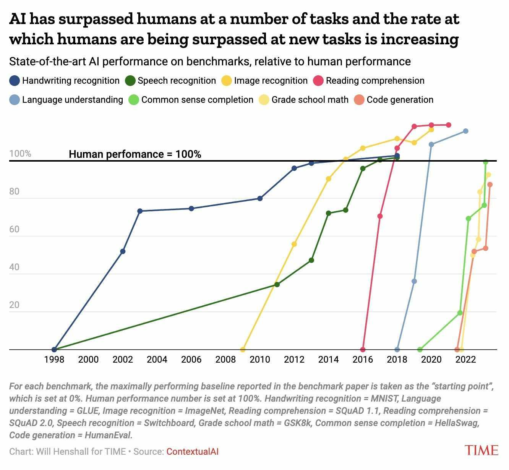
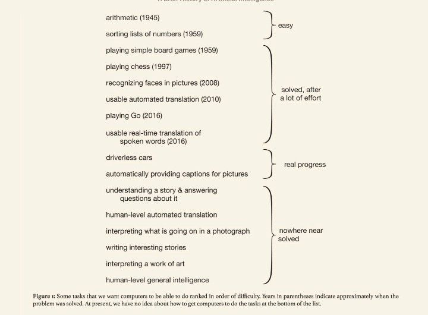
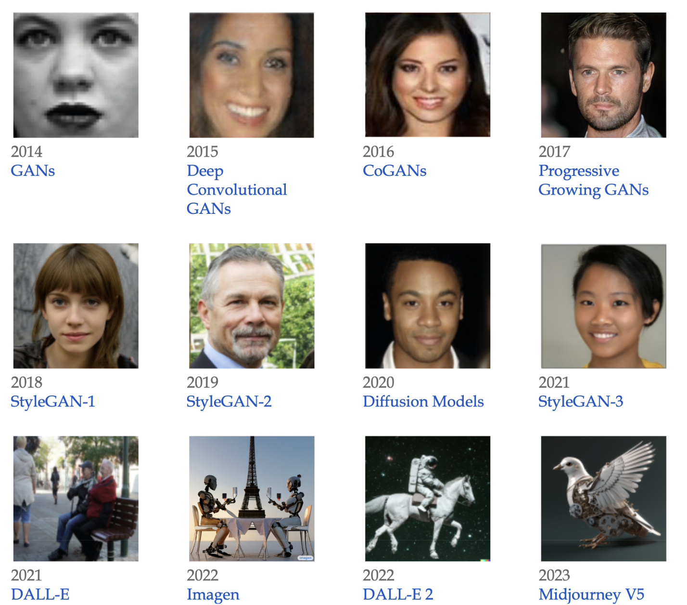
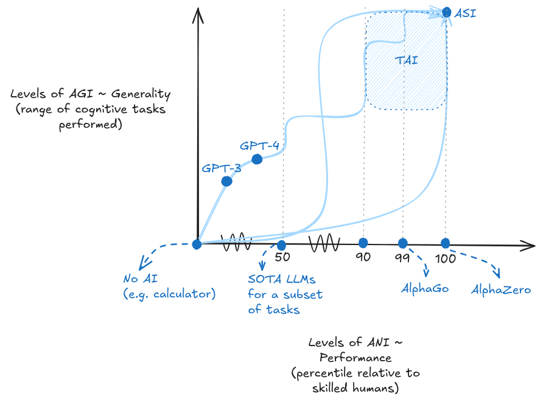
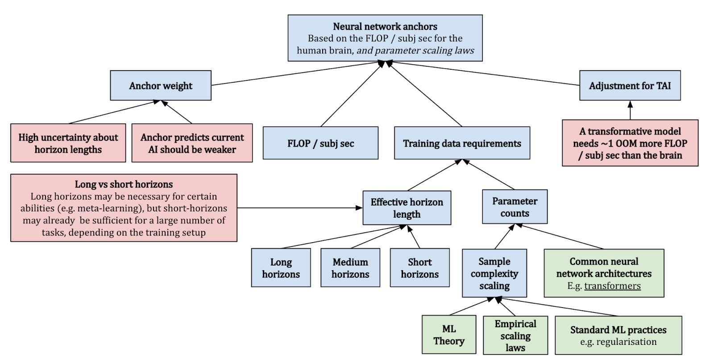
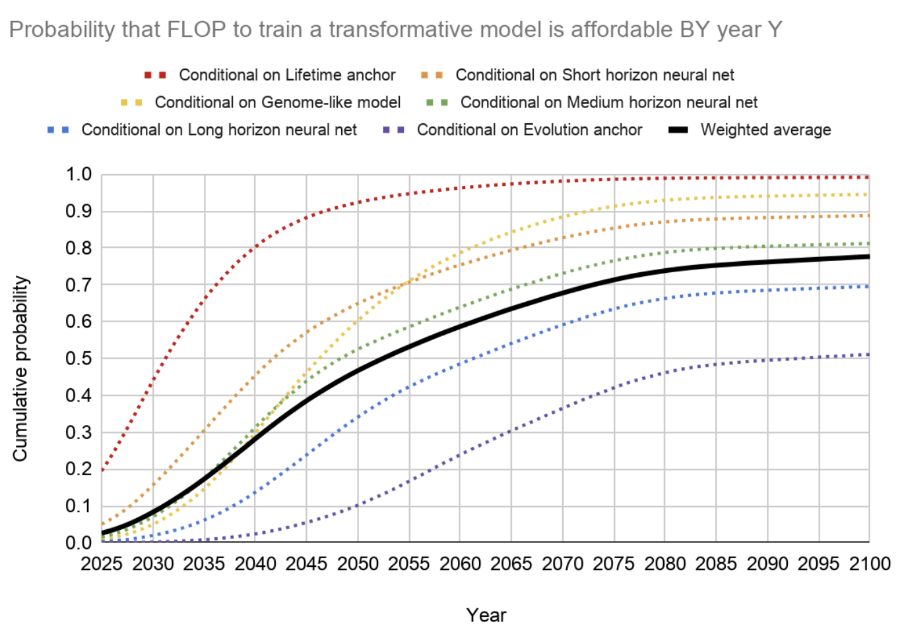
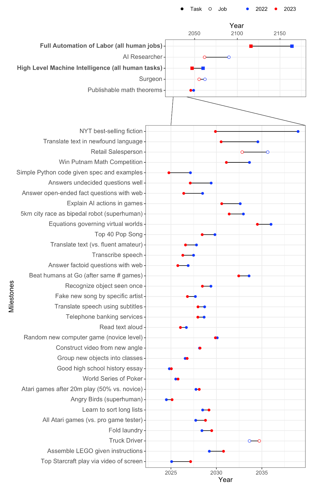
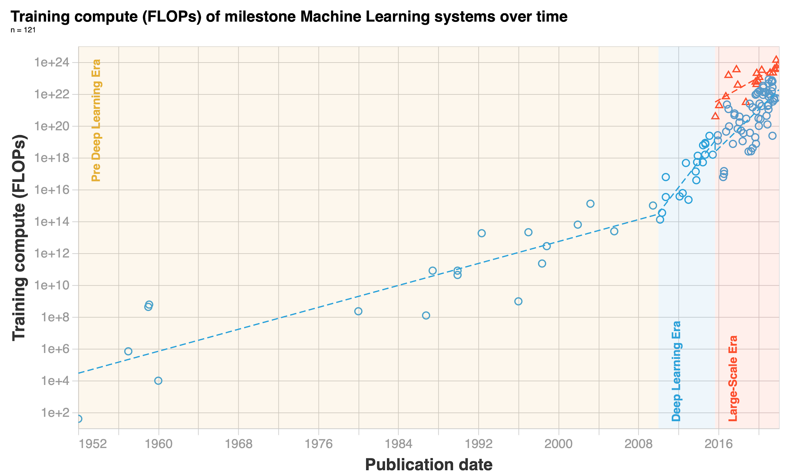
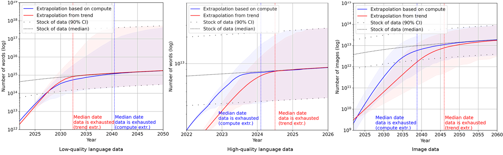
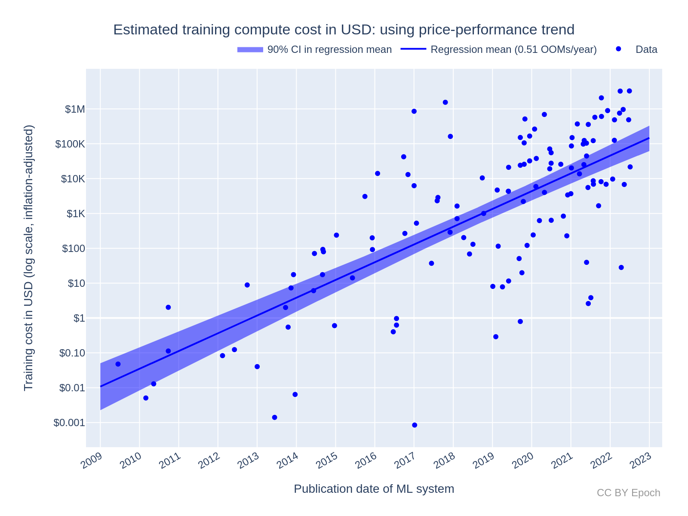

# Capabilities
# Introduction
State-of-the-Art AI: We begin with a brief introduction to the current advancements in artificial intelligence as of 2024. We aim to acquaint readers with the latest breakthroughs across various domains such as language processing, vision, and robotics.
Foundation Models: The second section focuses on foundation models, the paradigm powering the state-of-the-art systems introduced in the previous section. We explain the key techniques underpinning the huge success of these models such as self-supervised learning, zero-shot learning, and fine-tuning. The section concludes by looking at the risks that the foundation model paradigm could pose such as power centralization, homogenization, and the potential for emergent capabilities.
Terminology: Before diving deeper, we establish the definitions that this book will be working with. This section explains why "capabilities" rather than "intelligence" is a more pragmatic measure for discussing AI risks. We also delineate key terms within the AI debate, such as Artificial General Intelligence (AGI), Artificial Super Intelligence (ASI), and Transformative AI (TAI). The section concludes by introducing the (t,n)-AGI framework which allows us to more concretely measure the level of AI capabilities on a continuous scale, rather than having to rely on discrete thresholds.
Leveraging Computation: In this section, we explore the importance of computation in AI's progress introducing the three main variables that govern the capabilities of today's foundation models - compute, data and parameter count. We explore scaling laws and hypotheses that predict the future capabilities of AI based on current scaling trends of these variables, offering insights into the computational strategies that could pave the way to AGI.
Forecasting: Finally, the chapter addresses the challenge of forecasting AI's future, using biological anchors as a method to estimate the computational needs for transformative AI. This section sets the groundwork for discussing AI takeoff dynamics, including speed, polarity, and homogeneity, offering a comprehensive view of potential futures shaped by AI development.
# State-of-the-Art AI
Over the last decade, the field of artificial intelligence (AI) has experienced a profound transformation, largely attributed to the successes in deep learning. This remarkable progress has redefined the boundaries of AI capabilities, challenging many preconceived notions of what machines can achieve. The following sections detail some of these advancements.

Figure*üòó* Once a benchmark is published, it takes less and less time to solve it. This can illustrate the accelerating progress in AI and how quickly AI benchmarks are ‚Äúsaturating‚Äù, and starting to surpass human performance on a variety of tasks. (source (opens new window))*
# Language
Language-based tasks. There have been transformative changes in sequence and language-based tasks, primarily through the development of large language models (LLMs). Early language models in 2018 struggled to construct coherent sentences. The evolution from these to the advanced capabilities of GPT-3 (Generative Pre-Trained Transformer) and ChatGPT within less than 5 years is remarkable. These models demonstrate not only an improved capacity for generating text but also for responding to complex queries with nuanced, common-sense reasoning. Their performance in various question-answering tasks, including those requiring strategic thinking, has been particularly impressive.
**GPT-4. **One of the state-of-the-art language models in 2024 is OpenAI’s LLM GPT-4. In contrast with the text-only GPT-3 and follow-ups, GPT-4 is multimodal: it was trained on both text and images. This means that it can now not only generate text based on images but has also gained some other capabilities. GPT-4 saw an upgraded context window with up to 32k tokens (tokens ≈ words). The short-term memory limit of an LLM can be thought of as the model's ability to retain information from previous tokens within a certain context window. GPT-4 is trained via next-token prediction (autoregressive self-supervised learning). In 2018 GPT-1 was barely able to count to 10, while in 2024 GPT-4 can implement complex programmatic functions among other things.

Figure*: a list of "Nowhere near solved” [...] issues in AI, from "A brief history of AI", published in January 2021 (source (opens new window)). They also say: “At present, we have no idea how to get computers to do the tasks at the bottom of the list”. But everything in the category “Nowhere near solved” has been solved by GPT-4 (source (opens new window)), except human-level general intelligence.*
Scaling. Remarkably, GPT-4 is trained using roughly the same methods as GPT-1, 2, and 3. The only significant difference is the size of the model and the data given to it during training. The size of the model has gone from 1.5B parameters to hundreds of billions of parameters, and datasets have become similarly larger and more diverse.

Figure*: How fast is AI Improving? (source (opens new window))*
We have observed that just an expansion in scale has contributed to enhanced performance. This includes improvements in the ability to generate contextually appropriate responses, and highly diverse text across a range of domains. It has also contributed to overall improved understanding, and coherence. Most of those advances in the GPT series come from increasing the size and computation power behind the models, rather than fundamental shifts in architecture or training.
Here are some of the capabilities that have been emerging in the last few years:
Few-shot and Zero-shot Learning. The model's proficiency at understanding and executing tasks with minimal or no prior examples. 'Few-shot' means accomplishing the task after having seen a few examples in the context window, while 'Zero-shot' indicates performing the task without any specific examples (source (opens new window)). This also includes induction capabilities, i.e. identifying patterns and generalizing rules not present in the training, but only present in the current context window (source (opens new window)).
Metacognition. This refers to the ability to recognize its own knowledge and limitations, for example, being able to know the probability of the truth of something (source (opens new window)).
Theory of Mind. The capability to attribute mental states to itself and others, which helps in predicting human behaviors and responses for more nuanced interactions (source (opens new window), source (opens new window)).
Tool Use. Being able to interact with external tools, like using a calculator or browsing the internet, expanding its problem-solving abilities (source (opens new window)).
Self-correction. The model's ability to identify and correct its own mistakes, which is crucial for improving the accuracy of AI-generated content (source (opens new window)).
Figure*: An example of a mathematical problem solved by GPT-4 using Chain of Thought (CoT), from the paper “Sparks of Artificial General Intelligence” (source (opens new window)).*
Reasoning. The advancements in LLMs have also led to significant improvements in the ability to process and generate logical chains of thought and reasoning. This is particularly important in problem-solving tasks where a straightforward answer isn't immediately available, and a step-by-step reasoning process is required. (source (opens new window))
Programming ability. In coding, AI models have progressed from basic code autocompletion to writing sophisticated, functional programs.
Scientific & Mathematical ability. In mathematics, AI's have assisted in the subfield of automatic theorem proving for decades. Today's models continue to assist in solving complex problems. AI can even achieve a gold medal level in the mathematical Olympiad by solving geometry problems (source (opens new window)).

Figure*: GPT-4 solves some tasks that GPT-3.5 was unable to, like the uniform bar examination, where GPT-4 scores 90% compared to 10% for GPT-3.5. GPT-4 is also capable of vision processing, and the added vision component had only a minor impact, but it helped others tremendously. (source (opens new window))*
# Image Generation
The leap forward in image generation is not just in accuracy, but also in the ability to handle complex, real-world images. The latter, particularly with the advent of Generative Adversarial Networks (GANs) in 2014, has shown an astounding rate of progress. The quality of images generated by AI has evolved from simple, blurry representations to highly detailed and creative scenes, often in response to intricate language prompts.

Figure*: An example of state-of-the-art image recognition. The Segment Anything Model (SAM) by Meta’s FAIR (Fundamental AI Research) lab, can classify and segment visual data at highly precise levels. The detection is performed without the need to annotate images. (source (opens new window))*

Figure*: An example of the evolution of image generation. At the top left, starting from GANs (Generative Adversarial Networks) to the bottom right, an image from MidJourney V5.*
The rate of progress within a single year alone is quite astounding as is seen from the improvements between the V1 of the MidJourney image generation model in early 2022, to the V6 in December 2023.
Figure*: MidJourney AI image generation over 2022-2023. Prompt: high-quality photography of a young Japanese woman smiling, backlighting, natural pale light, film camera, by Rinko Kawauchi, HDR (source (opens new window))*
# Multi & Cross modality
AI systems are becoming increasingly multimodal. This means that they can process images, text, audio, vision, and robotics using the same model. So they are trained using multiple different “modes” and can translate between them after deployment.
Cross-modality. A model is called cross-modal when the input of a model is in one modality (e.g. text) and the output is in another modality (e.g. image). The section on computer vision showed fast progress between 2014 and 2020 in cross-modality. We went from text-to-image models only capable of generating black-and-white pixelated images of faces, to models capable of generating an image of any textual prompt. More examples of cross-modality include OpenAIs Whisper (source (opens new window)) which is capable of speech-to-text transcription.
Multi-modality. A model is called multi-modal when both the inputs and outputs of a model can be in more than one modality. E.g. audio-to-text, video-to-text, text-to-image, etc…

Figure:* Image-to-text and text-to-image multimodality from the Flamingo model. (source (opens new window))*
DeepMind’s 2022 Flamingo model, could be “rapidly adapted to various image/video understanding tasks” and “is also capable of multi-image visual dialogue”. (source (opens new window)) Similarly, DeepMind’s 2022 Gato model, was called a "Generalist Agent". It was a single network with the same weights which could “play Atari, caption images, chat, stack blocks with a real robot arm, and much more”. (source (opens new window)) Continuing this trend, DeepMind’s 2023 Google Gemini model could be called a Large Multimodal Model (LMM). The paper described Gemini as “natively multimodal” and claimed to be able to “seamlessly combine their capabilities across modalities (e.g. extracting information and spatial layout out of a table, a chart, or a figure) with the strong reasoning capabilities of a language model (e.g. its state-of-art-performance in math and coding)”(source (opens new window))
# Robotics
The field of robotics has also been progressing alongside artificial intelligence. In this section, we provide a couple of examples where these two fields are merging, highlighting some robots using inspiration from machine learning techniques to make advancements.

Figure:* Researchers used Model-Free Reinforcement Learning to automatically learn quadruped locomotion in only 20 minutes in the real world instead of in simulated environments. The Figure shows examples of learned gaits on a variety of real-world terrains. (source (opens new window))*
Advances in robotics. At the forefront of robotic advancements is PaLM-E, a general-purpose, embodied model with 562 billion parameters that integrates vision, language, and robot data for real-time manipulator control and excels in language tasks involving geospatial reasoning. (source (opens new window))
Simultaneously, developments in vision-language models have led to breakthroughs in fine-grained robot control, with models like RT-2 showing significant capabilities in object manipulation and multimodal reasoning. RT-2 demonstrates how we can use LLM-inspired prompting methods (chain-of-thought), to learn a self-contained model that can both plan long-horizon skill sequences and predict robot actions. (source (opens new window))
Mobile ALOHA is another example of combining modern machine learning techniques with robotics. Trained using supervised behavioral cloning, the robot can autonomously perform complex tasks “such as sauteing and serving a piece of shrimp, opening a two-door wall cabinet to store heavy cooking pots, calling and entering an elevator, and lightly rinsing a used pan using a kitchen faucet.” (source (opens new window)) Such advancements not only demonstrate the increasing sophistication and applicability of robotic systems but also highlight the potential for further groundbreaking developments in autonomous technologies.
Figure:* DeepMinds RT-2 can both plan long-horizon skill sequences and predict robot actions using inspiration from LLM prompting techniques (chain-of-thought). (source (opens new window))*
# Playing Games
AI and board games. AI has made continuous progress in game playing for decades. Starting from AIs beating the world champion at chess in 1997 (source (opens new window)), Scrabble in 2006 (source (opens new window)) to DeepMind’s AlphaGo (opens new window) in 2016, which was good enough to defeat the world champion in the game of Go, a game assumed to be notoriously difficult for AI. Within a year, the next model AlphaZero (opens new window) trained through self-play had mastered multiple games of Go, chess, and shogi reaching a superhuman level after less than three days of training.
AI and video games. We started using machine learning techniques on simple Atari games in 2013 (source (opens new window)). By 2019, OpenAI Five defeated the world champions at DOTA2 (source (opens new window)), while in the same year, DeepMind’s AlphaStar beat professional esports players at StarCraft II (source (opens new window)). Both these games require thousands of actions in a row at a high number of actions per minute. In 2020 DeepMind MuZero model, described as “a significant step forward in the pursuit of general-purpose algorithms” (source (opens new window)), was capable of playing Atari games, Go, chess, and shogi without even being told the rules.
In recent years, AI's capability has extended to open-ended environments like Minecraft, showcasing an ability to perform complex sequences of actions. In strategy games, Meta’s Cicero displayed intricate strategic negotiation and deception skills in natural language for the game Diplomacy (source (opens new window)).
Figure*: A map of diplomacy and the dialog box where the AI negotiates. (source (opens new window))*
??? note "Example of Voyager: Planning and Continuous Learning in Minecraft with GPT-4"
Voyager (source (opens new window)) stands as a particularly impressive example of the capabilities of AI in continuous learning environments. This AI is designed to play Minecraft, a task that involves a significant degree of planning and adaptive learning. What makes Voyager so remarkable is its ability to learn continuously and progressively within the game's environment, using GPT-4 contextual reasoning abilities to plan and write the code necessary for each new challenge. Starting from scratch in a single game session, Voyager initially learns to navigate the virtual world, engage and defeat enemies, and remember all these skills in its long-term memory. As the game progresses, it continues to learn and store new skills, leading up to the challenging task of mining diamonds, a complex activity that requires a deep understanding of the game mechanics and strategic planning. The ability of Voyager to integrate new information continuously and utilize it effectively showcases the potential of AI in managing complex, changing environments and performing tasks that require a long-term buildup of knowledge and skills.

Figure*: Voyager discovers new Minecraft items and skills continually by self-driven exploration, significantly outperforming the baselines. (source (opens new window)**)*
# Foundation Models
What are foundation models? Foundation models represent a fundamental shift in how we develop AI systems. Rather than building specialized models for specific tasks, we now train large-scale models that serve as a "foundation" for many different applications. These models can be fine-tuned or prompted to perform specific tasks, similar to how we can build many different types of buildings using the same base structure (Bommasani et al., 2022 (opens new window)).
???+ note "Foundation Models - Video Introduction"
!!! warning "This video is optional and not necessary to understand the text."
What makes foundation models important for AI safety? The reason we start this entire book by talking about foundation models is because this shift toward centralized general-purpose systems, rather than narrow specialized ones, introduces new risks around emergence, dual-use, and capability generalization. Their ability to learn broad, transferable capabilities has led to increasingly sophisticated behaviors emerging from relatively simple training objectives (Wei et al., 2022 (opens new window)). Complex capabilities, combined generality and scale, means we need to seriously consider safety risks that previously seemed theoretical or distant.
Why did the paradigm of foundation models come about? Training specialized AI models for every task was inefficient and limiting. Traditional approaches required collecting labeled datasets and building custom models for each new application. This meant progress was bottlenecked by the need for human-labeled data and the inability to transfer knowledge between tasks effectively. Foundation models solved these limitations through self-supervised learning on massive unlabeled datasets - allowing them to learn general-purpose capabilities that can be adapted to specific tasks. Advances in specialized hardware and parallelism (e.g., large clusters of NVIDIA GPUs), new developments in neural network architectures (e.g. transformers), and the increased easy access to vast amounts of online data all contributed to solving this problem. The short answer is foundation models came about due to the bitter lesson. We talk about this a lot more in the next section.
How did the foundation model paradigm emerge? The traditional approach of training specialized AI models for every task proved inefficient and limiting. Progress was bottlenecked by the need for human-labeled data and the inability to transfer knowledge between tasks effectively. Foundation models overcame these limitations through self-supervised learning on massive unlabeled datasets. This breakthrough was enabled by advances in specialized hardware like GPUs, new neural architectures like transformers, and increased access to vast amounts of online data (Kaplan et al., 2020 (opens new window)). This progression follows what we call the "bitter lesson" in AI development, which we'll discuss in detail in the next section.
What are examples of foundation models? Foundation models now span multiple domains of artificial intelligence. In language processing, models like GPT-4 and Claude have demonstrated sophisticated capabilities in understanding and generating human language, from simple conversations to complex reasoning tasks (OpenAI, 2023 (opens new window)). In computer vision, models like DALL-E 3 and Stable Diffusion have revolutionized image understanding and generation, creating highly realistic images from text descriptions (Betker et al., 2023 (opens new window)). We're seeing an increasing trend toward multi-modal foundation models like GPT-4V and Gemini that can seamlessly work across different types of data - processing and generating text, images, code, and more (Google, 2023 (opens new window)). Even in reinforcement learning, where traditionally models were trained for specific tasks, we're seeing foundation models like Gato demonstrate the ability to learn general-purpose behaviors that can be adapted to various tasks (Reed et al., 2022 (opens new window)).
Why do we distinguish between foundation models and frontier models? When discussing AI safety, it's important to understand the distinction between foundation models and frontier models. Frontier models represent the cutting edge of AI capabilities - they are the most advanced models in their respective domains. While many frontier models are also foundation models (like Claude 3.5 Sonnet), this isn't always the case. For example, AlphaFold, while being a frontier model in protein structure prediction, isn't typically considered a foundation model because it's specialized for a single task rather than serving as a general foundation for multiple applications (Jumper et al., 2021 (opens new window)). This distinction becomes particularly important because most AI safety research and regulation frameworks focus on frontier models due to their advanced capabilities. When discussions about AI safety reference "foundation models," they're typically referring specifically to frontier foundation models - those foundation models that also represent the current state-of-the-art in capabilities. Understanding this distinction helps us better target and implement safety measures where they're most critically needed.
# Training
How are foundation models trained differently from traditional AI systems? One key innovation of foundation models is their training paradigm. Generally, foundation models use a two-stage training process. First, they go through what we call a pre-training, and then second, they can be adapted through various mechanisms like fine-tuning or scaffolding to perform specific tasks. Rather than learning from human-labeled examples for specific tasks, these models learn by finding patterns in huge amounts of unlabeled data. This shift toward self-supervised learning on massive datasets fundamentally changes not just how models learn, but also what kinds of capabilities and risks might emerge (Bommasani et al., 2022 (opens new window)). From a safety perspective, this means we need to understand both how these training methods work and how they might lead to unexpected behaviors.
Figure*: Bommasani Rishi et. al. (2022) "On the Opportunities and Risks of Foundation Models (opens new window)"*
What is pre-training? Pre-training is the initial phase where the model learns general patterns and knowledge from massive datasets of millions or billions of examples. During this phase, the model isn't trained for any specific task - instead, it develops broad capabilities that can later be specialized. This generality is both powerful and concerning from a safety perspective. While it enables the model to adapt to many different tasks, it also means we can't easily predict or constrain what the model might learn to do (Hendrycks et al., 2022 (opens new window)).
How does self-supervised learning enable pre-training? Self-supervised learning (SSL) is the key technical innovation that makes foundation models possible. This is how we actually implement the pre-training phase. Unlike traditional supervised learning, which requires human-labeled data, SSL leverages the inherent structure of the data itself to create training signals. For example, instead of manually labeling images, we might just hide part of a full image we already have and ask a model to predict what the rest should be. So it might predict the bottom half of an image given the top half, learning about which objects often appear together. As an example, it might learn that images with trees and grass at the top often have more grass, or maybe a path, at the bottom. It learns about objects and their context — trees and grass often appear in parks, dogs are often found in these environments, paths are usually horizontal, and so on. These learned representations can then be used for a wide variety of tasks that the model was not explicitly trained for, like identifying dogs in images, or recognizing parks - all without any human-provided labels! The same concept applies in language, a model might predict the next word in a sentence, such as "The cat sat on the ____," learning grammar, syntax, and context as long as we repeat this over huge amounts of text.
What is fine-tuning**?** After pre-training, foundation models can be adapted through two main approaches: fine-tuning and prompting. Fine-tuning involves additional training on a specific task or dataset to specialize the model's capabilities. For example, we might use Reinforcement Learning from Human Feedback (RLHF) to make language models better at following instructions or being more helpful. Prompting, on the other hand, involves providing the model with carefully crafted inputs that guide it toward desired behaviors without additional training. We'll discuss these adaptation methods in more detail in Chapter 8 when we explore scalable oversight.
Why does this training process matter for AI safety? The training process of foundation models creates several unique safety challenges. First, the self-supervised nature of pre-training means we have limited control over what the model learns - it might develop unintended capabilities or behaviors. Second, the adaptation process needs to reliably preserve any safety properties we've established during pre-training. Finally, the massive scale of training data and compute makes it difficult to thoroughly understand or audit what the model has learned. Many of the safety challenges we'll discuss throughout this book - from goal misgeneralization to scalable oversight - are deeply connected to how these models are trained and adapted.
# Properties
Why do we need to understand the properties of foundation models? Besides just understanding the training process, we also need to understand the key defining characteristics or the abilities of these models. These properties often determine both the capabilities and potential risks of these systems. They help explain why foundation models pose unique safety challenges compared to traditional AI systems. Their ability to transfer knowledge, generalize across many different domains, and develop emergent capabilities means we can't rely on traditional safety approaches that assume narrow, predictable behavior.
What is transfer learning? Transfer learning is one of the most fundamental properties of foundation models - their ability to transfer knowledge learned during pre-training to new tasks and domains. Rather than starting from scratch for each task, we can leverage the general knowledge these models have already acquired (Bommasani et al., 2022 (opens new window)). This property enables rapid adaptation and deployment, it also means that both capabilities and safety risks can transfer in unexpected ways. For instance, a model might transfer not just useful knowledge but also harmful biases or undesired behaviors to new applications.
What are zero-shot and few-shot learning? The ability to perform new tasks with very few examples, or even no examples at all. For example, GPT-4 can solve novel reasoning problems just from a natural language description of the task (OpenAI, 2023 (opens new window)). This emergent ability to generalize to new situations is powerful but concerning from a safety perspective. If models can adapt to novel situations in unexpected ways, it becomes harder to predict and control their behavior in deployment.
Why is generality? Generalization in foundation models works differently from traditional AI systems. Rather than just generalizing within a narrow domain, these models can generalize capabilities across domains in surprising ways. However, this generalization of capabilities often happens without a corresponding generalization of goals or constraints - a critical safety concern we'll explore in detail in our chapter on goal misgeneralization. For example, a model might generalize its ability to manipulate text in unexpected ways without maintaining the safety constraints we intended (Hendrycks et al., 2022 (opens new window)).
Figure*: Bommasani Rishi et. al. (2022) "On the Opportunities and Risks of Foundation Models (opens new window)"*
Why is multi-modality? Models can work with multiple types of data (text, images, audio, video) simultaneously. This isn't just about handling different types of data. A better description is that they can make connections across modalities in sophisticated ways (Google, 2023 (opens new window)). From a safety perspective, multi-modality introduces new challenges because it expands the ways models can interact with and influence the world. A safety failure in one modality might manifest through another in unexpected ways.
??? quote "Sam Altman (CEO of OpenAI) in a conversation with Bill Gates (Cronshaw, 2024 (opens new window))"
Multimodality will definitely be important. Speech in, speech out, images, eventually video. Clearly, people really want that. Customizability and personalization will also be very important.
# Risks
What makes foundation models hard to control? The difficulty of controlling these models stems from three interconnected challenges. First, once trained, their internal representations and behaviors are extremely difficult to modify in targeted ways. Unlike traditional software where we can directly edit specific functions, changing one behavior in a foundation model risks unpredictable effects on other capabilities. Second, when these models are deployed across many applications, maintaining control becomes a distributed systems problem. Safety failures can propagate through multiple systems before they're detected. Third, their black-box nature makes it extremely difficult to understand why they make specific decisions or how they might behave in novel situations - a challenge we'll explore deeply in our chapter on interpretability.
How do resource requirements limit development and access? Training foundation models requires massive computational resources, creating a delicate balance between cost and accessibility. While adapting an existing model might be relatively affordable, the substantial initial training costs risk centralizing power among a few well-resourced entities. This concentration of power raises important questions about oversight and responsible development, that we'll address in our chapter on governance. For example, a single training run of GPT-4 sized models can cost tens or hundreds of millions of dollars, effectively limiting who can participate in their development. Continued scaling has also brought up many concerns around the environmental impact of AI training runs. (Patterson et al., 2023 (opens new window)).
Figure*: The rising costs of training frontier AI models (Cottier et al., 2024 (opens new window)) *
What risks come from homogenization? Homogenization occurs when many AI systems are derived from the same foundation models. This creates a systemic risk - if a foundation model has biases or failure modes, these could propagate to all models fine-tuned from it (Bommasani et al., 2022 (opens new window)). For example, if a widely-used foundation model has encoded harmful biases or unsafe behaviors, these might manifest across numerous applications, from content generation to automated decision-making. They also have fixed knowledge cutoffs based on their training data, creating potential safety issues when deployed in rapidly changing environments. This risk of correlated failures becomes particularly concerning when foundation models are deployed in critical systems. (Hendrycks et al., 2022 (opens new window)).
What is emergence, and why does it matter? Foundation models can effectively leverage increases in data, computation, and model size to improve their capabilities. The models become qualitatively different as they scale, often developing new capabilities entirely absent in smaller versions (Kaplan et al., 2020 (opens new window)). This property is called emergence - the development of capabilities that weren't explicitly trained for. This can be both a good thing and a bad thing.
We might encounter new, unexpected behaviors and risks that weren't present in smaller models. This emergence often happens discontinuously as models scale up, making it difficult to predict what capabilities might suddenly appear. Which means it also makes it difficult to predict which risks will emerge when. When combined with homogenization, this unpredictability becomes especially concerning - a single foundation model integrated into multiple critical systems could lead to correlated failures that span multiple safeguards or backup systems (Hendrycks et al., 2022 (opens new window)). Therefore, this points to a need for a proactive approach to AI safety. Having safety measures in place before we begin scaling and training bigger models.
How do these limitations inform our approach to safety? We just briefly touched on some of the risks in this subsection to give you a basic intuition for why it is important to work on AI Safety. The entire next chapter is dedicated to a deep dive on different risks from AI models, and how they might come about.
# Intelligence
# Case Studies
!!! warning "The bulk of this subsection will deal with the theory and historical aspects of defining intelligence. If you are more interested in just the core practical aspects of how we measure artificial general intelligence (AGI), then you can safely skip to the next subsection - measurement."
Why do we need to define intelligence? In our previous section on foundation models, we explored how modern AI systems are becoming increasingly powerful. But before we can meaningfully discuss the risks and safety implications of these systems, we need to agree on what we mean when we talk about AGI. Some believe that "sparks" of AGI are already present in the latest language models (Bubeck et al., 2023 (opens new window)), while others predict human-level AI within a decade (Bengio et al., 2024 (opens new window)). Without a clear definition, how are we supposed to assess such claims or plan appropriate safety measures?
The core point is that if you can't define something, you can't measure it. If you can't measure it, you can't reliably track progress or identify potential risks. Think about an example from physics - saying something like "it moved 5" makes no sense without specifying the unit of measurement. Did it move 5 meters, 5 feet, or 5 royal cubits? Nobody knows. If we don't know how far or fast it moved, then can we enforce speed limits? Also, no. The same applies to intelligence, and subsequent risks and safety techniques. Just as physics needed standardized units like meters and watts to advance beyond qualitative descriptions, AI safety research needs rigorous definitions to move beyond vague analogies and anthropomorphisms.
**What makes defining intelligence so challenging? **If everyone agrees that we need a definition to measure progress and design safety measures, then why don’t we have a universally agreed upon definition? The problem is that the word intelligence is a term we use to describe multiple overlapping abilities - from problem-solving and learning to adaptation and abstract reasoning. Besides this, different academic disciplines view intelligence through different lenses. Psychologists emphasize measurable cognitive skills, computer scientists focus on task performance, and philosophers debate qualities like the relationship of intelligence to consciousness and self-awareness. So which approach is the most relevant to understanding and planning for AI Safety?
Case Study: Imitation based approach to intelligence. The Turing Test (or the imitation game) suggested that intelligence could be measured through a machine's ability to imitate human conversation (Turing, 1950 (opens new window)). However, this behaviorist approach proved inadequate - modern language models can often pass Turing-style tests while lacking fundamental reasoning capabilities (Rapaport, 2020 (opens new window)). This is also still a process based approach, and was meant mainly as a philosophical thought experiment rather than a concrete operationalizable measure of intelligence.
Case Study: Consciousness based approaches to intelligence. One early view focused on machines that could truly understand and have cognitive states similar to humans (Searle, 1980 (opens new window)). However, this definition proves problematic on multiple levels. First, consciousness remains poorly understood and difficult to measure. Second, we are unsure if intelligence and consciousness are necessarily linked - a system could potentially be highly intelligent without being conscious, or conscious without being particularly intelligent. A system doesn't need to be conscious to cause harm. Whether an AI system is conscious or not has no bearing on its ability to make high-impact decisions or take potentially dangerous actions.
Case Study: Brain analogy based approaches to intelligence. Another early approach defined AGI in terms of systems that rival or surpass the human brain in complexity and speed. This brain-centric definition is problematic for several reasons. While our brains may be the only example of general intelligence we have, modern AI has shown that matching human neural architecture isn't necessary for achieving intelligent behavior. From a safety perspective, focusing on brain-like architecture tells us little about what risks a system might pose - a system could be very unlike a brain in structure but still be capable of dangerous actions.
Case study: Process/Adaptability based approaches to intelligence. The process-based view sees intelligence as the efficiency of learning and adaptation, rather than accumulated capabilities. A few researchers adopt this view of intelligence. Under this view, intelligence is "the capacity of a system to adapt to its environment while operating with insufficient knowledge and resources" (Wang, 2020 (opens new window)). Alternatively, it is described as "the efficiency with which a system can turn experience and priors into skills" (Chollet, 2019 (opens new window)). While this focus on meta-learning and adaptation captures something fundamental about intelligence, but from a safety perspective, what ultimately matters is what these systems can actually do - their concrete capabilities - rather than how they achieve these capabilities. This leads us to the final approach.
Case study 5: The capabilities approach to intelligence. The motivating question behind this view is - If an AI system can perform dangerous tasks at human-level or beyond, does it really matter whether it achieved this through sophisticated learning processes, efficient memorization, with/without consciousness? If an AI system has capabilities that could pose risks - like sophisticated planning, manipulation, or deception - these risks exist regardless of whether the system acquired these capabilities through "true intelligence", "real understanding" or sophisticated pattern matching. The capabilities-based approach cuts through philosophical debates by asking concrete questions: What can the system actually do? How well can it do it? What range of tasks can it handle? This framework provides clear standards for progress and, crucially for safety work, clear ways to identify potential risks. The majority of AI labs use this capabilities-focused approach in how they frame their AGI goals. For example, AGI has been defined as "highly autonomous systems that outperform humans at most economically valuable work" (OpenAI, 2014 (opens new window)). Safety considerations are framed similarly in saying that the mission is to ensure "transformative AI helps people and society" (Anthropic, 2024 (opens new window)).
!!! quote "Capabilities vs Intelligence (Krakovna, 2023 (opens new window))"
When discussing AI risks, talk about capabilities, not intelligence... People often have different definitions of intelligence, or associate it with concepts like consciousness that are not relevant to AI risks, or dismiss the risks because intelligence is not well-defined.
Given these considerations, for the vast majority of this book, our primary focus will remain on the practical framework of capabilities for evaluation and safety assessment. This capabilities-focused approach is most relevant for immediate safety work, regulation, and deployment decisions. We acknowledge that research into consciousness, sentience, ethics surrounding digital minds and the fundamental nature of intelligence continues to be valuable but is less actionable for immediate safety work.
In our next subsection, we will explore how we can concretely define and measure capabilities within this framework. We'll see how moving beyond simple binary thresholds of "narrow" versus "general" AI helps us better understand the progression of AI capabilities and their associated risks.
# Measuring
Why do traditional definitions of AGI fall short? In the previous section, we explored how foundation models are becoming increasingly powerful and versatile. But before we can meaningfully discuss risks and safety implications, or make predictions about future progress, we need clear ways to measure and track AI capabilities. This section introduces frameworks for measuring progress toward artificial general intelligence (AGI) and understanding the relationship between capabilities, autonomy, and risk. For example, OpenAI's definition of AGI as "systems that outperform humans at most economically valuable work" (OpenAI, 2014 (opens new window)), or the commonly used definition "Intelligence measures an agent’s ability to achieve goals in a wide range of environments." (Legg and Hutter, 2007 (opens new window)) and many others are not specific enough to be operationalizable. Which humans? Which goals? Which tasks are economically valuable? What about systems that exceed human performance on some tasks but only for short durations?
Why do we need better measurement frameworks? Historically, discussions about AGI have often relied on binary thresholds - systems were categorized as either "narrow" or "general", "weak" or "strong", "sub-human" or "human-level." While these distinctions helped frame early discussions about AI, they become increasingly inadequate as AI systems grow more sophisticated. Just like we sidestepped debates around whether AIs display "true intelligence" or "real understanding" in favor of a more practical framework that focuses on capabilities, similarly we want to avoid debates around things like whether a system is "human-level" or not. It is much more pragmatic to be able to make statements like - it outperforms 75% of skilled adults on 30% of cognitive tasks.

Figure*: This is the continuous outlook of AI measuring performance. All points on this axis can be called ANI (except for the origin).*
!!! note "Definition: Artificial Narrow Intelligence (ANI) (IBM, 2023 (opens new window))"
Weak AI—also called Narrow AI or Artificial Narrow Intelligence (ANI)—is AI trained and focused to perform specific tasks. Weak AI drives most of the AI that surrounds us today. ‘Narrow’ might be a more accurate descriptor for this type of AI as it is anything but weak; it enables some very robust applications, such as Apple's Siri, Amazon's Alexa, IBM Watson, and autonomous vehicles.
Levels of artificial narrow intelligence (ANI). We should think about the performance of AI systems on a continuous spectrum. Traditional definitions of ANI correspond to high performance on a very small percentage of tasks. For example, chess engines like AlphaZero outperform 100% of humans, but only on roughly 0.01% of cognitive tasks. Similarly, specialized image recognition systems might outperform 95% of humans, but again only on a tiny fraction of possible tasks. According to the definition above, all these systems would be defined as ANI, but if we think about them in a continuous range of what percentage of skilled humans they can outperform we get a much more specific and granular picture.
How can we build a better measurement framework for AGI? We need to track AI progress along both - performance (how well can it do things?) and generality (how many different things can it do?). Just like we can describe a point on a map using latitude and longitude, we can characterize AGI systems by their combined level of performance and degree of generality, as measured by benchmarks and evaluations. This framework gives us a much more granular way to track progress. This precision helps us better understand both current capabilities and likely development trajectories.

Figure*: Table of performance x generality showing both levels of ANI, and levels of AGI.*
Where do current AI systems fit in this framework? Large language models like GPT-4 show an interesting pattern - they outperform roughly 50% of skilled adults on perhaps 15-20% of cognitive tasks (like basic writing and coding), while matching or slightly exceeding unskilled human performance on a broader range of tasks. This gives us a more precise way to track progress than simply debating whether such systems qualify as "AGI." LLMs like GPT-4 are early forms of AGI (Bubeck, 2023 (opens new window)), and over time we will achieve stronger AGI as both generality and performance increase. To understand how this continuous framework relates to traditional definitions, let's examine how key historical concepts map onto our performance-generality space.

Figure*: The two-dimensional view of performance x generality. The different curves are meant to represent the different paths we can take to ASI. Every single point on the path corresponds to a different level of AGI. The specific development trajectory is hard to forecast. This will be discussed in the section on forecasting and takeoff.*
!!! note "Definition: Transformative AI (TAI) (Karnofsky, 2016 (opens new window))"
Potential future AI that triggers a transition equivalent to, or more significant than, the agricultural or industrial revolution.
Transformative AI (TAI). Transformative AI represents a particularly interesting point in our framework because it isn't tied to specific performance or generality thresholds. Instead, it focuses on a range of impacts. For example, a system could be transformative by achieving moderate performance (outperforming 60% of humans) across a wide range of economically important tasks (50% of cognitive tasks), or by achieving exceptional performance (outperforming 99% of humans) on a smaller but critical set of tasks (20% of cognitive tasks).
!!! note "Definition: Human Level AI (TAI) (Karnofsky, 2016 (opens new window))"
Potential future AI that triggers a transition equivalent to, or more significant than, the agricultural or industrial revolution.
Human Level AI (HLAI). This term is sometimes used interchangeably with AGI, and refers to an AI system that equals human intelligence in essentially all economically valuable work. However, we only explain it here for reasons of completeness. Human-level is not well-defined which makes this definitions difficult to operationalize. If we map this onto the levels of AGI framework, then it roughly would correspond to outperforming 99% of skilled adults at most cognitve non physical tasks.
!!! quote "Definition: Artificial Superintelligence (ASI) (Bostrom, 2014 (opens new window))"
Any intellect that greatly exceeds the cognitive performance of humans in virtually all domains of interest.
Artificial Superintelligence (ASI). If systems achieve superhuman performance at all cognitive tasks, then this would be the strongest form of AGI, also called superintelligence. In our framework, ASI represents the upper-right corner - systems that outperform 100% of humans on nearly 100% of cognitive tasks.
What is the relationship between levels of AGI and risk? Understanding AI systems through continuous performance and generality measures helps us better assess risk. Rather than waiting for systems to cross some "AGI threshold," we can identify specific combinations of performance and generality that warrant increased safety measures. For example:
A system achieving 90% performance on 30% of tasks might require different safety protocols than one achieving 60% performance on 70% of tasks
Certain capability combinations might enable dangerous emergent behaviors even before reaching "human-level" on most tasks
The rate of improvement along either axis provides important signals about how quickly additional safety measures need to be developed
There are various other variables that we can add to make this picture even more precise. For example, just like we have levels of performance and generality, we can also have levels of autonomy with which these systems operate. As an example, at a low level of autonomy a human fully controls a task and uses AI to automate mundane sub-tasks, whereas at a higher level of autonomy we might see the AI take on a substantive role,or even co-equal work division. (Morris et al., 2024 (opens new window)) Similarly, we have the variable of propensities which would measure what the AI model tends to do by default (Shevlane et al., 2023 (opens new window)), and the variable of controllability which measures what percent of the time the AI model is able to subvert our current safety measures (Roger et al., 2023 (opens new window)). Combining our definition of levels of AGI with variables like this gives us an extremely accurate picture of what the model is able to, and allows actionable technical safety and regulatory proposals.
# Scaling
In the previous section, we explored how we can measure AI capabilities along continuous dimensions of performance and generality. Now we'll examine one of the most important drivers behind improvements in these capabilities: scale.
# The Bitter Lesson
We assume that most of you probably went to university in an era where machine learning and AI roughly mean the same thing, or rather deep learning and AI mean the same thing. This hasn't always been true. Early in the history of artificial intelligence, researchers took very different approaches to creating intelligent systems. They believed that the key to artificial intelligence was carefully encoding human knowledge and expertise into computer programs. This led to things like expert systems filled with hand-crafted rules and chess engines programmed with sophisticated strategic principles. However, time and time again, researchers learned what we now call the bitter lesson.
!!! quote "The Bitter Lesson (Sutton, 2019 (opens new window))"
The biggest lesson that can be read from 70 years of AI research is that general methods that leverage computation are ultimately the most effective, and by a large margin. [...] The bitter lesson is based on the historical observations that 1) AI researchers have often tried to build knowledge into their agents, 2) this always helps in the short term, and is personally satisfying to the researcher, but 3) in the long run it plateaus and even inhibits further progress, and 4) breakthrough progress eventually arrives by an opposing approach based on scaling computation by search and learning.
What makes this lesson bitter? The bitterness comes from discovering that decades of careful human engineering and insight were ultimately less important than simple algorithms plus computation. In chess, researchers who had spent years encoding grandmaster knowledge watched as "brute force" search-based approaches like Deep Blue defeated world champion Garry Kasparov. In computer vision, hand-crafted feature detectors were outperformed by convolutional neural networks that learned their own features from data. In speech recognition, systems based on human understanding of phonetics were surpassed by statistical approaches using hidden Markov models (Sutton, 2019 (opens new window)).
Does the bitter lesson mean we don't need any human engineering? Human ingenuity playing a smaller role in improving AI is a subtle point that can be easily misunderstood. The transformer architecture for example might seem to contradict the bitter lesson because they rely on sophisticated architectural innovations. Human ingenuity is important, but the subtlety is in recognizing that there's a difference between two types of human engineering:
Algorithm-level improvements: These make better use of existing compute, like: better optimizers (Adam), architecture innovations (transformers, attention mechanisms) or training approaches (better learning rate schedules).
Domain-specific engineering improvements: These try to encode human knowledge, like: special architectures designed for specific problems, hand-crafted features or rules or task-specific inductive biases.
The bitter lesson isn't arguing against all human engineering - it's specifically cautioning against the second type. The transformer architecture exemplifies this pattern - it doesn't encode any specific knowledge about language, but rather provides a general mechanism for learning patterns that becomes increasingly powerful as we scale up compute and data.
What does the bitter lesson mean for AI Safety? In the previous section, we discussed measuring AI capabilities along continuous dimensions of performance and generality. If it is the case that these continue to advance primarily through scaling, then we may have more predictable trajectories. This creates both opportunities and risks because performance and generality will continue to rise as long as scale is all that we need, but it also means that forecasting AI development trajectories and preparing appropriate safety measures for predictable capability levels is possible.
# Scaling Laws
Why do AI labs care about scaling laws? Training large AI models is extremely expensive - potentially hundreds of millions of dollars for frontier models. Scaling laws help labs make crucial decisions about resource allocation: Should they spend more on GPUs or on acquiring training data? Should they train a larger model for less time or a smaller model for longer? For example, with a fixed compute budget, they might need to choose between training a 20-billion parameter model on 40% of their data or a 200-billion parameter model on just 4%. Getting these tradeoffs wrong can waste enormous resources. So it is important to be able to have a predictable relationship between how you invest your money and what level of capabilities you get at the end.

Figure*: Example of capabilities increasing with an increasing with one of variables in the scaling laws - parameter count. The same model architecture (Parti) was used to generate an image using an identical prompt, with the only difference between the models being the parameter size. There are noticeable leaps in quality, and somewhere between 3 billion and 20 billion parameters, the model acquires the ability to spell words correctly. (Yu et al., 2022 (opens new window))*
What are scaling laws? Scaling laws are mathematical relationships that describe how an AI system's performance changes as we vary key inputs like model size, dataset size, and computing power. These are empirical power-law relationships that have been observed to hold across many orders of magnitude. The key variables involved are:
Compute (C): This represents the total processing power used during training, measured in floating-point operations (FLOPs). Think of this as the training "budget" - more compute means either training for longer, using more powerful hardware, or both. While having more GPUs helps increase compute capacity, compute ultimately refers to the total number of operations performed, not just hardware.
Parameters (N): These are the tunable numbers in the model that get adjusted during training - like knobs that the model can adjust to better fit the data. More parameters allow the model to learn more complex patterns but require more compute per training step. Current frontier models have hundreds of billions of parameters.
Dataset size (D): This measures how many examples the model trains on (typically measured in tokens for language models). The larger the dataset, the more information the model can read. Simultaneously, to read and learn from more data, the training runs also need to be generally longer, which in turn increases the total compute needed before the model can be considered “trained”. While researchers initially focused on scaling parameters, we've learned that the relationship between compute, parameters, and data is crucial - many early models were actually trained with suboptimal ratios between these variables.
Loss (L): This measures how well the model performs on its training objective. This is what we are trying to minimize, and it tends to improve as we scale up these variables.

Figure*: OpenAIs Scaling Laws showing impact of each variable on performance (loss) (Kaplan et al., 2020 (opens new window))*
OpenAI's initial scaling laws in 2020. To determine the relationships between different variables that might contribute to scale, OpenAI conducted a series of experiments. For an intuitive idea of how they came up with the scaling laws, you can imagine that while training a model you can hold some variables fixed while varying others and see how loss changes. Eventually this allows you to see some patterns. As an example, dataset size can be kept constant, while parameter count and training time are varied, or parameter count is kept constant and data amounts are varied, etc… So we can get a measurement of the relative contribution of each towards overall performance. If these relationships hold true across many different model architectures and tasks, then this suggests they capture something fundamental about deep learning systems. This is how the first generation of scaling laws came about from OpenAI. For example, by these laws if you have a 10x more compute, you should increase model size by about 5x and data size by only 2x. (Kaplan et al., 2020 (opens new window))

Figure*: (Kaplan et al., 2020 (opens new window))*
DeepMind's scaling law update in 2022. DeepMind found that most large language models were actually significantly overparameterized for the amount of data they were trained on. The Chinchilla scaling laws showed that for optimal performance, models should be trained on approximately 20 times more data tokens than they have parameters. This meant that many leading models could have achieved better performance with smaller sizes, but with more data. They were called chinchilla scaling laws because the laws were demonstrated using a model called Chinchilla. This was a 70B parameter model trained on more data, which outperformed much larger models like Gopher (280B parameters) despite using the same amount of compute. So by these laws, for optimal performance, you should increase model size and dataset size in roughly equal proportions - if you get 10x more compute, you should make your model ~3.1x bigger and your data ~3.1x bigger. (Hoffmann et al., 2022 (opens new window))
The Broken Neural Scaling Laws (BNSL) update in 2023. Ongoing research showed that performance doesn't always improve smoothly - there can be sharp transitions, temporary plateaus, or even periods where performance gets worse before getting better. Examples of this include things like "Grokking", where models suddenly achieve strong generalization after many training steps, or deep double descent, where increasing model size initially hurts then helps performance. Rather than simple power laws, BNSL uses a more flexible functional form that can capture these complex behaviors. This allows for more accurate predictions of scaling behavior, particularly around discontinuities and transitions. Scaling laws are a good baseline, but according discontinuous jumps in capabilities and abrupt step changes are still possible. (Caballero et al., 2023 (opens new window))
How do training and inference scaling differ? Training scaling involves using more compute during initial model training by using larger models, training for longer, or using bigger datasets. Another way that we might not be accounting for using scaling laws, is called inference time scaling. This instead uses more compute at runtime through techniques like chain-of-thought prompting, repeated sampling, or tree search. For example, you can either train a very large model that generates high-quality outputs directly, or train a smaller model that achieves similar performance by using more computation to think through problems step by step at inference time.
# Scaling Hypothesis
What is the strong scaling hypothesis? The strong scaling hypothesis proposes that simply scaling up current foundation model architectures with more compute and data will be sufficient to reach transformative AI capabilities and potentially even ASI. This view suggests we already have all the fundamental components needed - it's just a matter of making them bigger, following established scaling laws. (Branwen, 2020 (opens new window)) There is heated debate around this hypothesis and we can't possibly cover every argument. We can give you a slight overview in the next few paragraphs.
Proponents include OpenAI (OpenAI, 2023 (opens new window)), Anthropic’s CEO Dario Amodei (Amodei, 2023 (opens new window)), Conjecture (Conjecture, 2023 (opens new window)), DeepMind’s safety team (DeepMind, 2022 (opens new window)), and others. According to the DeepMind team, there are "not many more fundamental innovations needed for AGI. Scaled-up deep learning foundation models with RL from human feedback (RLHF) fine-tuning [should suffice]" (DeepMind, 2022 (opens new window)).
What are the key arguments supporting the strong scaling hypothesis? The most compelling evidence for this view comes from empirical observations of progress in recent years. Researchers have been developing algorithms that follow the bitter lesson's principle for many years (focusing on general methods that leverage compute effectively). But even when researchers have developed sophisticated algorithms following the bitter lesson's principles, these improvements still only account for 35% of performance gains in language models in 2024, with the remaining 65% coming purely from increased scale in compute and data (Ho et al., 2024 (opens new window)). Basically, even when our algorithmic improvements align perfectly with the bitter lesson, they're still far less important than raw scaling.
The emergence of unexpected capabilities provides another powerful argument for strong scaling. We've seen previous generations of foundation models demonstrate remarkable abilities that weren't explicitly trained for, like programming for example. This emergent behavior hints that it is not impossible for higher-order metacognitive abilities like causal reasoning to similarly emerge simply as a function of scale. We see that bigger models become increasingly sample efficient - they require fewer examples to learn new tasks. This improved efficiency with scale suggests that scaling up further could eventually lead to human-like few-shot learning capabilities, which is a precursor for TAI and ASI. Finally, these models also appear to be capable of learning any task that can be expressed through their training modalities. Right now this is text for LLMs but there is a clear path forward to multimodal LMMs. Since text can express virtually any human-comprehensible task, scaling up language understanding might be sufficient for general intelligence.
**What are the key arguments against the strong scaling hypothesis? **Recent research has also identified several challenges to the strong scaling hypothesis. The most immediate is data availability - language models will likely exhaust high-quality public text data between 2026 and 2032 (Villalobos et al., 2024 (opens new window)). While synthetic data might help address this limitation, it's unclear whether it can provide the same quality of learning signal as organic human-generated content. Alternatively, we still have a lot of multi-modal data left to train on (like YouTube videos) despite running out of text data.
A more fundamental challenge comes from the way these models work. LLMs are fundamentally "interpolative databases" (or stochastic parrots , or a variety of other similar terms). The point being that they just build up a vast collection of vector transformations through pre-training. While these transformations become increasingly sophisticated with scale, critics argue there's a fundamental difference between recombining existing ideas and true synthesis - deriving novel solutions from first principles. However, this is not an airtight case against strong scaling. This could simply be a limitation of current scale - a larger model trained on multimodal data might learn to handle any new novel situation simply as a recombination of previously memorized patterns. So, it is unclear if template recombination actually does have an upper bound.
What is the weak scaling hypothesis? Given these challenges, a weaker version of the scaling hypothesis has also been proposed. According to the weak scaling hypothesis even though scale will continue to be the primary driver of progress, we will also need targeted architectural and algorithmic improvements to overcome specific bottlenecks. These improvements wouldn't require fundamental breakthroughs, but rather incremental enhancements to better leverage scale. (Branwen, 2020 (opens new window)) Similar to the strong scaling hypothesis, the weak one is also contentious and debated. We can provide a few of the results arguing both for and against this outlook.
LeCun's H-Jepa architecture (LeCun, 2022 (opens new window)), or Richard Sutton’s Alberta Plan (Sutton, 2022 (opens new window)) are notable plans that might support the weak scaling hypothesis.
**What are the key arguments supporting the weak scaling hypothesis? **The arguments for strong scaling, like algorithmic improvements only contributing 35% of performance gains in language models can also double count for weak scaling. Since one third is still a non-trivial role to play in capabilities improvement. Some more empirical observations also support weak scaling. Like hardware support for lower-precision calculations, which provided order-of-magnitude performance improvements for machine learning workloads (Hobbhahn et al., 2023, "Trends in Machine Learning Hardware"). These kinds of targeted improvements don't change the fundamental scaling story but rather help us better leverage available resources. Similarly, the Chinchilla results showed that many models were poorly optimized along the different variables that contribute to capabilities. This suggests that there is still room for improvement through better scaling strategies rather than fundamental breakthroughs. (Hoffmann et al., 2022 (opens new window))
What if neither the weak nor the strong scaling hypothesis is true? Essentially, both the scaling laws (which only predict foundation model capabilities) and most debates around "scale is all you need" often miss crucial aspects of AI development that happen outside the scope of what scaling laws can predict. They don't account for improvements in AI "scaffolding" (like chain-of-thought prompting, tool use, or retrieval), or combinations of multiple models working together in novel ways. Debates around the scaling laws only tell us about the capabilities of a single foundation model trained in a standard way. For example, by the strong scaling hypothesis we can reach TAI by simply scaling up the same foundation model until meta cognitive abilities emerge. But even if scaling stops, halting capabilities progress on the core foundation model (in either a weak or a strong way), the external techniques that leverage the existing model can still continue advancing.
Think of foundation models like LLMs or LMMs as simply one transistor. Alone they might not be able to do much, but if we combine enough transistors we end up with all the capabilities of a supercomputer. Many researcher think that this is a crucial element where future capabilities will come from. It is also referred to as "unhobbling" (Aschenbrenner, 2024 (opens new window)), "schlep" (Cotra, 2023 (opens new window)) and various other terms, but it all of them in principle points to the same thing - raw scaling of single model performance is only one part of overall AI capability advancement. This is illustrated using the two images below.
Figure*: Augmentation/Scaffolding stays constant, but if the scaling hypothesis, weak or strong, is true, then capabilities keep improving.*
Figure*: Scaling stays constant, but other elicitation techniques and scaffolding keep improving, then capabilities keep improving. Realistically, the future is probably going to see both improvement due to scaffolding and scale. So for now, there does not seem to be an upper limit on improving capabilities as long as either one of the two hold.*
We go deeper into the arguments and counterarguments for all views on scaling foundation models in the appendix.
!!! note "Argument: Against scaling - Memorization vs Synthesis"
This is a slightly deeper dive into trying to understand the argument of both sides if you are interested. It is slightly more technical, and can be safely skipped.
When we talk about LLMs as "interpolative databases", we're referring to how they store and manipulate vector programs - these shou;dnt be confused with traditional computer programs like python or C++. These templates, or vector programs are transformations in the model's embedding space. Early work on embeddings showed simple transformations (like king - man + woman = queen), but modern LLMs can store millions of much more complex transformations. But due to a function of scale, LLMs can now store arbitrarily complex vector functions — so complex, in fact, that researchers found it more accurate to refer to them as vector programs rather than functions.
So what's happening in LLMs is that they build up a vast database of these vector programs through pre-training. When we say they're doing "template matching" or "memorization", what we really mean is that they're storing millions of these vector transformations that they can retrieve and combine with each prompt.
So the deciding question for/against strong (and even weak scaling) becomes - Is this type of template program combination enough to reach general intelligence. In other words can program synthesis be approximated using recombinations of enough templates (also called abstractions and many other words but the key idea is the same).
People who argue against this say that no matter how numerous or sophisticated, are fundamentally different from true program synthesis. True program synthesis would mean deriving a new solution from first principles - not just recombining existing transformations. There are some empirical observations to support this view. Like the Caesar cipher example: "LLMs can solve a Caesar cipher with key size 3 or 5, but fail with key size 13, because they've memorized specific solutions rather than understanding the general algorithm" (Chollet, 2024 (opens new window)). Or alternatively, the "reversal curse" which shows that even SOTA language models in 2024 cannot do reverse causal inference - if they are trained on "A is B" they fail to learn "B is A" (Berglund et al., 2023 (opens new window))
But this does still not seem to completely invalidate scaling as of yet. If we scale up the size of the program database and cram more knowledge and patterns into it, we are going to be increasing its performance. (Chollet, 2024 (opens new window)) Both sides of the debate agree on this. So this suggests the real issue isn't whether template recombination has an obvious absolute upper bound, but whether it's the most efficient path to general intelligence. Program synthesis might achieve the same capabilities with far less compute and data by learning to derive solutions rather than memorizing patterns.
# Forecasting
In previous sections, we explored how foundation models leverage computation through scaling laws and the bitter lesson. But how can we actually predict where AI capabilities are headed? This section introduces key forecasting methodologies that help us anticipate AI progress and prepare appropriate safety measures.
Why should we care about forecasting? Forecasting AI progress is critical for AI safety work. The timeline to transformative AI shapes everything from research priorities to governance frameworks – if we expect transformative AI within 5 years versus 50 years, this dramatically changes which safety approaches are viable. For example, if we expect rapid progress, we might need to focus on safety measures that can be implemented quickly rather than long-term theoretical research. Additionally, understanding likely development trajectories helps us anticipate specific capabilities and prepare targeted safety measures before they emerge. This is especially critical given the potential for sudden capability jumps, especially in dangerous capabilities like malware generation or deception.
!!! question "Initial Forecast"
Before we explore more sophisticated methods, make an initial prediction: When do you think we'll see transformative AI? Keep this forecast in mind as we examine different forecasting approaches.
# Methodology
How do we convert beliefs into probabilities and forecasts? We need some ways to actually convert beliefs like "I think AGI is likely this decade" into precise probability estimates. One way we can do this is by decomposition - breaking down complex beliefs into smaller, measurable components and analyzing relevant data. Rather than directly estimating the year in which transformative AI emerges, we can start by separately forecasting things like compute growth, algorithmic progress, and hardware limitations, and then combine these estimates (Zhang, 2024 (opens new window)). This decomposition approach helps us ground predictions in observable trends rather than relying purely on intuitions. So, using this approach there are two main techniques we need to discuss - zeroth-order forecasting for establishing baselines, and first-order forecasting for understanding trajectories of change.
What are reference classes and why do they matter? When analyzing each component of our decomposed forecast, we need relevant historical examples to inform our predictions. This is where reference classes come in - they are categories of similar historical situations we can use to make predictions. For AI development, relevant reference classes might include things like previous technological revolutions (like the industrial or computer revolution), other optimization systems (like biological evolution or economies), or the impact of rapid scientific advances (like CRISPR or mRNA vaccines). The basic point is that they should be meaningfully analogous to what you're trying to predict, but they don't have to be from the same exact category.
What is zeroth-order forecasting? The simplest forecasting approach starts with recognizing that tomorrow often looks pretty close to today. Zeroth-order forecasting uses reference classes - looking at 3-5 similar historical examples and using their average as a baseline prediction. Rather than trying to identify trends or make complex projections, it assumes recent patterns will continue. (Steinhardt, 2024 (opens new window)) These examples can be from different reference classes. For a concrete example of using multiple reference classes in AI safety forecasting: Suppose we want to predict how quickly advanced AI systems might transition from "safe" to "potentially dangerous" capabilities. We could look at:
How long it took language models to go from generating basic text to being able to plan multi-step deception (an AI-specific reference point)
How quickly nuclear technology transitioned from peaceful to military applications (a dual-use technology reference point)
How rapidly biological techniques like CRISPR went from lab discovery to widespread use requiring safety protocols (a biosafety reference point)
Looking at these examples collectively might suggest that dangerous capabilities often emerge within 2-5 years of the underlying technical breakthroughs, which could inform how urgently we need to develop safety measures. Major shifts in development patterns tend to be rare, making recent history a decent baseline predictor of the near future. This doesn't mean changes never happen – but it does mean that deviating from recent patterns requires strong evidence.
What is first-order forecasting? While zeroth-order forecasting uses historical examples from various reference classes as direct predictors, first-order forecasting attempts to identify and project forward patterns in the direct historical data of AI development. In AI, we see some pretty consistent exponential growth patterns. The compute used in frontier models has grown by 4.2x annually since 2010, training datasets have expanded by approximately 2.9x per year, and hardware performance improves by roughly 1.35x every year through architectural advances (Epoch AI, 2023 (opens new window)). First-order forecasting tries to identify these kinds of patterns and project them forward. This is the approach taken by most systematic AI forecasting work today, including Epoch AI's compute-centric framework and Ajeya Cotra's biological anchors. However, it's worth keeping in mind that even though these trends have been remarkably consistent, they can't continue indefinitely. Physical, thermodynamic, or economic constraints will eventually limit growth. The key question is: when do these limits become relevant? We will explore this in the next section on the compute centric framework.
How do we combine different forecasts? Multiple forecasting approaches often give us different predictions – zeroth-order might suggest one timeline while trend extrapolation indicates another. Just like we can average out over the opinions of many experts, we can integrate these predictions to get a hopefully more accurate picture. One approach is to model each forecast as a probability distribution and combine them using mixture models (Steinhardt, 2024 (opens new window)). For example, if zeroth-order forecasting suggests 3-4 years between major breakthroughs based on recent history, while trend extrapolation points to 1.5-2 years based on compute growth, a combined model might predict 2-3 years but with wider confidence intervals to account for uncertainty in both approaches.
**What about situations with limited data or limited reference classes? **While decomposition, reference classes and trend analysis form the backbone of AI forecasting, we sometimes face questions where direct data is limited or no clear reference classes exist. For instance, predicting the societal impact of advanced AI systems or forecasting novel capabilities that haven't been demonstrated before. In these cases, we often turn to expert judgment and superforecasters. An advantage of expert forecasting is the ability to integrate qualitative insights that might be missed by pure trend analysis. For example, experts might notice early warning signs of diminishing returns or identify emerging technical approaches that could accelerate progress. This balanced use of both data-driven methods and expert judgment is especially important for AI safety work. While we should ground our predictions in empirical trends whenever possible, we also need frameworks for reasoning about unprecedented developments and potential discontinuities in progress.
How far do empirical findings generalize? There's an ongoing debate about how much we can trust current trends to predict future AI development. Some researchers argue that empirical findings in AI generalize surprisingly far - that patterns we observe today will continue to hold even as systems become more capable (Steinhardt, 2022 (opens new window)). However, our track record with forecasting suggests we should be cautious. When superforecasters predicted MATH dataset accuracy would improve from 44% to 57% by June 2022, actual performance reached 68% - a level they had rated extremely unlikely. Shortly after, GPT-4 achieved 86.4% accuracy. There are a couple of more examples of LLMs surprising most forecasters and experts on certain benchmarks. (Cotra, 2023 (opens new window)).
This pattern of underestimating progress suggests that while empirical trends provide valuable guidance, they may not capture all the dynamics of AI development. Prior to GPT-3, many experts believed tasks like complex reasoning would require specialized architectures. The emergence of these capabilities from scaling alone shows how systems can develop unexpected abilities simply through quantitative improvements. This has critical implications for both forecasting and governance - we need frameworks that can adapt to capabilities emerging faster or differently than current trends suggest.
**How does this help us predict transformative AI? **These forecasting fundamentals help us critically evaluate claims about AI timelines and takeoff scenarios. When we encounter predictions about discontinuous progress or smooth scaling, we can ask: What trends support this view? What reference classes are relevant? How have similar forecasts performed historically? This systematic approach helps us move beyond intuition to make more rigorous predictions about AI development trajectories.
<--
Trend Based Forecasting
This is an entire new subsection that will go here. It is still to be written.
-->
# Biology Inspired Forecasting
What are Biological anchors? Biological anchors are a forecasting technique. To find a reference class, assume that the human brain is indicative of general intelligence. This means we can treat it as a proof of concept. Whatever “amount of compute” it takes to train a human being, might be roughly the same amount it should take to train a TAI. The biological anchors approach estimates the compute required for AI to reach a level of intelligence comparable to humans, outlined through several steps:
First, assess how much computation the human brain performs, translating this into a quantifiable measure similar to computer operations in FLOP/s.
Second, estimate the amount of computation needed to train a neural network to match the brain's inferential capacity, adjusting for future improvements in algorithmic efficiency.
Third, examine when it would be feasible to afford such vast computational resources, taking into account the decreasing cost of compute, economic growth, and increasing investment in AI.
Finally, by analyzing these factors, we can predict when it might be economically viable for AI companies to deploy the necessary resources for developing TAI.
Determining the exact computational equivalent for the human brain's training process is complex, leading to the proposal of six hypotheses, collectively referred to as "biological anchors" or "bioanchors." Each anchor has a different weighting contributing to the overall prediction.
Evolution Anchor: Total computational effort across all evolutionary history.
Lifetime Anchor: Brain's computational activity from birth to adulthood (0-32).
Neural Network and Genome Anchors: Various computational benchmarks based on the human brain and genome to gauge the scale of parameters needed for AI to achieve general intelligence.
Forecasting with Biological Anchors. By integrating these anchors with projections of future compute accessibility, we can outline a potential timeline for TAI. This method aims to provide a "soft upper bound" on TAI's arrival rather than pinpointing an exact year, acknowledging the complexity and unpredictability of AI development. (source (opens new window)) The following image gives an overview of the methodology.

Figure*: The biological anchor model (source (opens new window))*
=== "Evolution anchor"
!!! warning "This is extra detail provided for those interested. It can be safely skipped."
This anchor quantifies the computational effort invested by evolution in shaping the human brain. It considers the vast amount of processing and learning that has taken place from the emergence of the first neurons to the development of the modern human brain. This method suggests that evolution has served as a form of "pre-training" for the human brain, enhancing its ability to adapt and survive. To estimate the computational power of this evolutionary "pre-training", the report considers the total amount of compute used by all animal brains over the course of evolution. This includes not just the brains of humans, but also those of our ancestors and other animals with nervous systems. The idea is that all of this brain activity represents a form of learning or adaptation that has contributed to the development of the modern human brain. While the exact calculations involved in this estimate are complex and subject to considerable uncertainty, the basic idea is to multiply the number of animals that have ever lived by the amount of compute each of their brains performed over their lifetimes. This gives an estimate of the total compute performed by all animal brains over the course of evolution.

Figure*: The Evolution anchor (Ho et al., 2022 (opens new window))*
Cotra accounts for these considerations and assumes that the “average ancestor” performed as many FLOP/s as a nematode, and that there were on average ~1e21 ancestors at any time. This yields a median of ~1e41 FLOP, which seems extraordinarily high compared to modern machine learning. As an example, Google’s PaLM model was trained with ~2.5e24 FLOP (17 orders of magnitude smaller). She gives this anchor a weight of 10%. (Ho et al., 2022 (opens new window))
=== "Lifetime anchor"
!!! warning "This is extra detail provided for those interested. It can be safely skipped."
This refers to the total computational activity the human brain performs over a human lifetime. This anchor is essentially a measure of the "training" a human brain undergoes from birth to adulthood and incorporates factors such as the number of neurons in the human brain, the amount of computation each neuron performs per year, and the number of years it takes for a human to reach adulthood. The human brain has an estimated 86 billion neurons. Each of these neurons performs a certain number of computations per second, which can be calculated as a certain number of operations per second in FLOP/s. When calculating the total amount of compute over a lifetime, these factors are multiplied together, along with the number of years a human typically lives.
For example, if we assume that a neuron is able to perform about 1000 operations per second, and there are about 31.5 million seconds in a year, then a single neuron would perform about 31.5 billion operations in a year. Now, if we multiply this by the estimated number of neurons in the human brain (86 billion), we get an estimate of the total brain-compute performed in one year. We can then multiply this by the number of years in a typical human lifespan to estimate the total brain-compute over a lifetime. Plugging in the numbers about brain FLOP/s seems to suggest that ~1e27 FLOP would be required to reach TAI. This seems low since examples from other technological domains suggest that the efficiency of things we build (on relevant metrics) is generally not great when compared to nature.

Figure*: The Lifelong anchor (Ho et al., 2022 (opens new window))*
Cotra's report finds a median of ~1e28 FLOP and only gives the lifetime anchor a 5% weight, indicating that it's not the most influential factor in the overall model. The report acknowledges the inherent uncertainties and complexities involved in such a calculation and uses this anchor as one of several to provide a range of estimates for the compute required to achieve AI with human-level performance. (Ho et al., 2022 (opens new window))
=== "Neural network Anchors"
!!! warning "This is extra detail provided for those interested. It can be safely skipped."
Each of the neural network anchors serves to provide a different perspective on the amount of compute that might be required to train a TAI. There are three Neural Network Anchors presented in the report: long (~1e37 FLOP), medium (~1e34 FLOP), and short horizon (~1e32 FLOP). These anchors hypothesize that the ratio of parameters to compute used by a TAI should be similar to the ratio observed in today's neural networks. Additionally, a TAI should perform approximately as many FLOPs per subjective second as a human brain. A “subjective second” is the time it takes a model to process as much data as a human can in one second (Ho et al., 2022 (opens new window)). As an example a typical human reads about 3-4 words per second for non-technical material, so “one subjective second” for a language model would correspond to however much time that the model takes to process about ~3-4 words of data. (Cotra, 2020 (opens new window)) Cotra determines the training data requirements based on a mix of machine learning theory and empirical considerations. She puts 15% weight on short horizons, 30% on medium horizons, and 20% on long horizons, for a total of 65% on the three anchors. (Ho et al., 2022 (opens new window))

Figure*: Neural network Anchors(source (opens new window))*
=== "Genome Anchor"
!!! warning "This is extra detail provided for those interested. It can be safely skipped."
The genome anchor looks at the FLOP/subj sec of the human brain and expects TAI to require as many parameters as there are bytes in the human genome. This hypothesis implicitly assumes a training process that’s structurally analogous to evolution, and that TAI will have some critical cognitive ability that evolution optimized for. This differs from the evolution anchor in that it assumes we can search over possible architectures/algorithms a lot more efficiently than evolution, using gradients. Due to this structural similarity, and because feedback signals about the fitness of a particular genome configuration are generally sparse, this suggests that the anchor only really makes sense with long horizon lengths. (source (opens new window))

Figure*: The Genome Anchor (Ho et al., 2022 (opens new window))*
At least at the time of writing (May 2022), machine learning architectures don’t look very much like the human genome, and we are yet to develop TAI – thus Cotra updates against this hypothesis towards requiring more FLOP. Overall, she finds a median of ~1e33 FLOP and places 10% weight on this anchor. (Ho et al., 2022 (opens new window))
**Affordability of compute. **The costs related to bio anchors are calculated by considering three different factors: Algorithmic progress, compute price estimates, and willingness to spend on machine learning. The report considers a doubling in algorithmic efficiency every ~2-3 years. As for prices, Cotra assumes cost decreases over time, halving every ~2.5 years, and further expects this to level off after 6 orders of magnitude. Cotra assumes that the willingness to spend on machine learning training runs should be capped at 1% of the GDP of the largest country, referencing previous case studies with megaprojects (e.g. the Manhattan Project), and should follow a doubling time of 2 years after 2025. The main uncertainty is whether or not existing trends are going to persist more than several years into the future. For instance, Epoch found that OpenAI’s AI and Compute investigation (OpenAI, 2018 (opens new window)) was too aggressive in its findings for compute growth. (Ho et al., 2022 (opens new window)) This suggests taking caution when interpreting the forecasts made by the Bio Anchors report.

Figure*: Affordability of compute (Ho et al., 2022 (opens new window))*
The following graph gives an overview of the findings. Overall, the graph takes a weighted average of the different ways that the trajectory could flow. This gives us an estimate of a >10% chance of transformative AI by 2036, a ~50% chance by 2055, and an ~80% chance by 2100. In 2022 a two-year update on the author’s (Ajeya Cotra) timelines was published. The updated timelines for TAI are ~15% probability by 2030, ~35% probability by 2036, a median of ~2040, and a ~60% probability by 2050. (Cotra, 2022 (opens new window))

Figure: Results from the biological anchor model for different anchors (source (opens new window))
**Criticisms. **The Biological Anchors framework provides a unique perspective but it's also crucial to recognize its limitations and the broader debates it sparks within the AI research community. It is not universally accepted as the primary predictive tool among all ML scientists or alignment researchers.
Platt's Law is a generalized observation named after Charles Platt. It is used to highlight a historical pattern where the estimated arrival of AGI (Artificial General Intelligence) consistently seems to be "just 30 years away". Vernor Vinge referenced it in the body of his famous 1993 NASA speech, whose abstract begins, “Within thirty years, we will have the technological means to create superhuman intelligence. Shortly after, the human era will be ended.” (Yudkowsky, 2021 (opens new window)) Yudkowsky notes that this law seems to fit remarkably well with the prediction made by the Biological Anchors report in 2020. As the statistical aphorism goes: "All models are wrong, but some are useful".
So to get a complete picture of how biological anchors were received, here are some of the criticisms of the Biological Anchors report:
Challenges Beyond Compute: While Biological Anchors highlight compute power as a critical factor for AI development, they may oversimplify the complexity of achieving transformative AI. Factors beyond sheer computing capacity, such as algorithm design, data availability, and the intricacies of learning environments, play pivotal roles. It’s overly simplistic to equate the future of AI solely with compute availability, as transformative AI development encompasses more nuanced challenges like algorithm innovation and data accessibility. (Karnofsky, 2021 (opens new window))
Potential for Rapid Advancements: Critics of the Biological Anchors method, such as Eliezer Yudkowsky, emphasize the unpredictability of AI progress and the potential for breakthroughs that could dramatically alter AI capabilities without adhering strictly to computational benchmarks derived from biology. These critiques highlight the importance of considering a range of factors and potential shifts in AI development paradigms that could accelerate progress beyond current forecasts. (Karnofsky, 2021 (opens new window))
Purpose and Misinterpretation: The Biological Anchors approach is intended to provide boundary estimates for AI development timelines rather than precise predictions. Misinterpretations may arise from expecting the method to offer specific year forecasts, whereas its goal is to outline possible upper and lower bounds, acknowledging the significant uncertainties in AI development. (Karnofsky, 2021 (opens new window))
Contemplating Paradigm Shifts: The AI field's history suggests that major paradigm shifts and technological breakthroughs could substantially impact development timelines. While deep learning currently dominates AI advances, the possibility of new, transformative methodologies emerging remains open, challenging the assumption that current trends will linearly continue into the future.
This is not an exhaustive list of all the criticisms but it serves to highlight the complexity of forecasting AI's future.
# Takeoff
This section introduces the concept of AI takeoff. There is much debate about how AI development will play out in the future. The main questions to consider are:
Speed: How quickly do AI systems become more powerful?
Continuity: Does the speed progress in sudden jumps or is the speed gradual?
Homogeneity: How similar are the AI systems to each other?
Polarity: How many AI systems do we see vying for power in the world?
Takeoff vs. Timelines. The difference between these two concepts is subtle, and forecasts in one domain affect the outlooks in the other. However, both takeoff and timelines offer some distinct insights: timelines provide a countdown to AI breakthroughs, while takeoff dynamics forecast the speed and breadth of their societal impact. Understanding both perspectives is key to preparing for the future of AI, guiding safety measures, policy development, and strategic research investment.
# Speed
Takeoff Speeds. Slow and fast takeoff scenarios offer contrasting views on AI's future trajectory, emphasizing different challenges and preparation strategies. While slow takeoff allows for iterative safety measures and societal adaptation, fast takeoff underscores the urgency of robust, pre-established safety frameworks. Understanding both dynamics is crucial for informed AI governance, safety research, and policy development, ensuring readiness for a range of possible futures.
Slow takeoff. This refers to a scenario where AI capabilities improve in a gradual and measured manner over a relatively longer temporal interval, which could be years or even decades. Note that the "speed" of the takeoff is not just about the raw increase in AI capabilities, but also about the societal and economic impact of those capabilities. Slow takeoff's advantage lies in the preparation time it affords, potentially allowing us to adapt, respond, and correct course if things go wrong. However, on the other hand, more time being exposed to a certain growth trajectory might also breed complacency. It might also be the case that most preparations undertaken before the onset of a slow takeoff would be rendered obsolete as better solutions gradually become visible which utilize new AI capabilities. In a slow takeoff scenario, humanity’s fate essentially depends on preparations put in place during the times when such growth is apparent. The terms "slow takeoff" and "soft takeoff" are often used interchangeably.
Fast takeoff. A "fast takeoff" envisages AI's leap to superintelligence in a short timeframe, such as hours or days, limiting human capacity for response or control. This speed leaves little to no room for humans to react, adapt, or manage the situation. Fast takeoff scenarios highlight the critical importance of preemptive safety and alignment efforts, as the window for post-emergence intervention could be minimal. Given such a short time to react, local dynamics of the takeoff become relevant. The primary mechanism behind a fast takeoff is often considered to be 'recursive self-improvement' through an “intelligence explosion”, where the AI system continually improves its own intelligence and capabilities. We talk about an intelligence explosion, and discontinuity in the next subsection. Terms like “fast takeoff”, “hard takeoff” and “FOOM” are often used interchangeably.
Speed vs. Continuity. We observe that AI systems are created in discrete "events", sometimes many months or years apart. As an example GPT-3 was released in June 2020, and GPT-4 was released in March 2023. Is there a sudden, extremely large jump between such releases? or could the capabilities have been predicted by extrapolating trends? Where speed might be a measure of how quickly the AI becomes superintelligent, continuity can be thought of as a measure of "surprise". Continuity measures the predictability and pattern of AI advancements, focusing on whether these advancements occur through gradual, steady improvements or unexpected breaks in previous technological trends. Even though we are presenting speed and continuity separately, the distinction between them is extremely nuanced. They are very related concepts, so much so that oftentimes most researchers use slow takeoff as analogous to continuous takeoff, and fast takeoff as analogous to discontinuous takeoff, making no distinction whatsoever.
Continuous takeoff. Continuous takeoff depicts AI's progression as an extension of existing trends, where advancements are made incrementally. An example is the steady advancement of technology witnessed during the Industrial Revolution, where each decade produced slightly better tools and machinery. The term 'continuous' in this context borrows from mathematical terminology, where a function is considered continuous if it doesn't have any abrupt changes or discontinuities. Some people prefer the term 'gradual' or 'incremental' over 'continuous' as they find it more descriptive and mathematically accurate.
Discontinuous Takeoff. The term 'discontinuous' in this context suggests that there are sudden jumps in capabilities, rather than being a smooth, gradual increase. This means that the AI system makes leaps that significantly exceed what would be expected based on past progress. In a discontinuous takeoff scenario, the AI's capabilities quickly surpass human control and understanding. The terms 'fast takeoff' and 'discontinuous takeoff' are often used interchangeably. However, the images below displaying different takeoff trajectories might help in clarifying the subtle differences between the concepts.
Figure*: A comparative illustration of combinations of slow and fast takeoff, alongside continuity. (Martin & Eth, 2021 (opens new window))*
# Similarity
**Homogenous takeoff. **This refers to the similarity among different AI systems in play during the development and deployment of advanced AI. (Hubinger, 2020 (opens new window)) Future AI systems might share significant similarities in their design, capabilities, and alignment. This could be due to shared underlying foundation models, common APIs, or similar training methods. The uniformity of AI systems under a homogenous takeoff scenario might imply the potential for easy cooperation between AI entities. Additionally, if homogeneity arises due to fine-tuning prevailing as the paradigm; the alignment of the initial AI system becomes the crucial factor for the alignment of all subsequent AI systems. A single misaligned system could, therefore, have widespread consequences, underscoring the importance of rigorous alignment and safety measures in early AI development stages. Homogeneity could either mitigate risks or exacerbate them, depending on the alignment and governance frameworks established during the initial phases of AI development.
Heterogeneity. A heterogeneous takeoff scenario represents diversity and variation in the development, safety levels, and deployment of AI systems. Several factors contribute to the heterogeneity in AI takeoff. First is the diversity in AI development approaches. Organizations and researchers might adopt different strategies and technologies, leading to varied outcomes in terms of AI capabilities and alignment. Moreover, competitive dynamics among AI projects could exacerbate this diversity, as teams race to achieve breakthroughs without necessarily aligning on methodologies or sharing crucial information. As an example, we might have a future where AI becomes a strategic national asset, and AI development is closely guarded. In this environment, the pursuit of AI capabilities becomes siloed, each company or country would then employ different development methodologies, potentially leading to a wide range of behaviors, functionalities, and safety levels.
# Polarity
Takeoff polarity in the context of AI development explores how power and control might be distributed during the critical phase when AI systems transition to higher levels of intelligence and capability. It measures whether we will see power centralized in the hands of a single entity or dispersed among various actors.
Unipolar Takeoff. In a unipolar takeoff scenario, the landscape is characterized by the emergence of a single AI system or entity that achieves a significant lead over all others. This lead could be due to a breakthrough that allows for a sudden leap in capabilities, enabling this entity to outpace competitors rapidly, or due to something like an intelligence explosion. The concept hinges on the idea that early advantages in AI development—be it through technological breakthroughs, resource accumulation, or strategic positioning—could allow one project to dominate the field. This dominance could then be used to consolidate power, leveraging economic gains and network effects to maintain a hold over AI advancements and their applications.
Multipolar Takeoff. Conversely, a multipolar takeoff scenario envisions a more balanced distribution of advanced AI systems across multiple entities. This diversity could stem from slower, more incremental progress in AI capabilities, allowing various projects to evolve in tandem without any single entity pulling decisively ahead. Factors contributing to a multipolar landscape include widespread sharing of technological advancements, collaborative efforts to ensure safety and alignment, and regulatory environments that promote competition and mitigate monopolistic outcomes. A unipolar scenario raises concerns about the concentration of power and the potential for misuse of advanced AI capabilities, while a multipolar world presents challenges in coordination among diverse entities or AI systems.
Factors Influencing Polarity. Several key elements influence whether takeoff polarity leans towards a unipolar or multipolar outcome:
Speed of AI Development: A rapid takeoff might favor a unipolar outcome by giving a significant advantage to the fastest developer. In contrast, a slower takeoff could lead to a multipolar world where many entities reach advanced capabilities more or less simultaneously.
Collaboration vs. Competition: The degree of collaboration and openness in the AI research community can significantly affect takeoff polarity. High levels of collaboration and information sharing could support a multipolar outcome, while secretive or highly competitive environments might push towards unipolarity.
Regulatory and Economic Dynamics: Regulatory frameworks and economic incentives also play a crucial role. Policies that encourage diversity in AI development and mitigate against the accumulation of too much power in any single entity's hands could foster a multipolar takeoff.
# Takeoff Arguments
The Overhang Argument. There might be situations where there are substantial advancements or availability in one aspect of the AI system, such as hardware or data, but the corresponding software or algorithms to fully utilize these resources haven't been developed yet. The term 'overhang' is used because these situations imply a kind of 'stored’ or ‘latent’ potential. Once the software or algorithms catch up to the hardware or data, there could be a sudden unleashing of this potential, leading to a rapid leap in AI capabilities. Overhangs provide one possible argument for why we might favor discontinuous or fast takeoffs. There are two types of overhangs commonly discussed:
Hardware Overhang: This refers to a situation where there is enough computing hardware to run many powerful AI systems, but the software to run such systems hasn't been developed yet. If such hardware could be repurposed for AI, this would mean that as soon as one powerful AI system exists, probably a large number of them would exist, which might amplify the impact of the arrival of human-level AI.
Data Overhang: This would be a situation where there is an abundance of data available that could be used for training AI systems, but the AI algorithms capable of utilizing all that data effectively haven't been developed or deployed yet.
Overhangs are also used as a counter argument to why AI pauses do not affect takeoff. One counter argument to the overhang argument is that it relies on the assumption that during the time that we are pausing AI development, the rate of production of chips will remain constant. It could be argued that the companies manufacturing these chips will not make as many chips if data centers aren't buying them. However, this argument only works if the pause is for any appreciable length of time, otherwise the data centers might just stockpile the chips. It is also possible to make progress on improved chip design, without having to manufacture as many during the pause period. However, during the same pause period we could also make progress on AI Safety techniques. (Elmore, 2024 (opens new window))
The Economic Growth Argument. Historical patterns of economic growth, driven by human population increases, suggest a potential for slow and continuous AI takeoff. This argument says that as AIs augment the effective economic population, we might witness a gradual increase in economic growth, mirroring past expansions but at a potentially accelerated rate due to AI-enabled automation. Limitations in AI's ability to automate certain tasks, alongside societal and regulatory constraints (e.g. that medical or legal services can only be rendered by humans), could lead to a slower expansion of AI capabilities. Alternatively, growth might far exceed historical rates. Using a similar argument for a fast takeoff hinges on AI's potential to quickly automate human labor on a massive scale, leading to unprecedented economic acceleration.
Compute Centric Takeoff Argument. This argument, similar to the Bio Anchors report, assumes that compute will be sufficient for transformative AI. Based on this assumption, Tom Davidson's 2023 report on compute-centric AI takeoff discusses feedback loops that may contribute to takeoff dynamics.
Investment feedback loop: There might be increasing investment in AI, as AIs play a larger and larger role in the economy. This increases the amount of compute available to train models, as well as potentially leading to the discovery of novel algorithms. All of this increases capabilities, which drives economic progress, and further incentivizes investment.
Automation feedback loop: As AIs get more capable, they will be able to automate larger parts of the work of coming up with better AI algorithms, or helping in the design of better GPUs. Both of these will increase the capability of the AIs, which in turn allow them to automate more labor.
Depending on the strength and interplay of these feedback loops, they can create a self-fulfilling prophecy leading to either an accelerating fast takeoff if regulations don't curtail various aspects of such loops, or a slow takeoff if the loops are weaker or counterbalanced by other factors. The entire model is shown in the diagram below:

Figure*: A summary of What a Compute-Centric Framework Says About Takeoff Speeds (Davidson, 2024 (opens new window))*
**Automating Research Argument. **Researchers could potentially design the next generation of ML models more quickly by delegating some work to existing models, creating a feedback loop of ever-accelerating progress. The following argument is put forth by Ajeya Cotra:
Currently, human researchers collectively are responsible for almost all of the progress in AI research, but are starting to delegate a small fraction of the work to large language models. This makes it somewhat easier to design and train the next generation of models.
The next generation is able to handle harder tasks and more different types of tasks, so human researchers delegate more of their work to them. This makes it significantly easier to train the generation after that. Using models gives a much bigger boost than it did the last time around.
Each round of this process makes the whole field move faster and faster. In each round, human researchers delegate everything they can productively delegate to the current generation of models — and the more powerful those models are, the more they contribute to research and thus the faster AI capabilities can improve. (Cotra, 2023 (opens new window))
So before we see a recursive explosion of intelligence, we see a steadily increasing amount of the full RnD process being delegated to AIs. At some point, instead of a significant majority of the research and design being done by AI assistants at superhuman speeds, it will become that - all of the research and design for AIs is done by AI assistants at superhuman speeds.
At this point there is a possibility that this might eventually lead to a full automated recursive intelligence explosion.
The Intelligence Explosion Argument. This concept of the 'intelligence explosion' is also central to the conversation around discontinuous takeoff. It originates from I.J. Good's thesis, which posits that sufficiently advanced machine intelligence could build a smarter version of itself. This smarter version could in turn build an even smarter version of itself, and so on, creating a cycle that could lead to intelligence vastly exceeding human capability (Yudkowsky, 2013 (opens new window)).
In their 2012 report on the evidence for Intelligence Explosions, Muehlhauser and Salamon delve into the numerous advantages that machine intelligence holds over human intelligence, which facilitate rapid intelligence augmentation. (Muehlhauser, 2012 (opens new window)) These include:
Computational Resources: Human computational ability remains somewhat stationary, whereas machine computation possesses scalability.
Speed: Humans communicate at a rate of two words per second, while GPT-4 can process 32k words in an instant. Once LLMs can write "better" than humans, their speed will most probably surpass us entirely.
Duplicability: Machines exhibit effortless duplicability. Unlike humans, they do not need birth, education, or training. While humans predominantly improve individually, machines have the potential to grow collectively. Humans take 20 years to become competent from birth, whereas once we have one capable AI, we can duplicate it immediately. Once AIs reach the level of the best programmer, we can just duplicate this AI. The same goes for other jobs.
Editability: Machines potentially allow more regulated variations. They exemplify the equivalent of direct brain enhancements via neurosurgery in opposition to laborious education or training requirements. Humans can also improve and learn new skills, but they don't have root access to their hardware: we are just starting to be able to understand the genome's "spaghetti code," while AI could use code versioning tools to improve itself, being able to attempt risky experiments with backup options in case of failure. This allows for much more controlled variation.
Goal coordination: Copied AIs possess the capability to share goals effortlessly, a feat challenging for humans.
# Appendix 1: Expert Opinions
???+ note "Expert Opinions - Video Introduction"
!!! warning "This video is optional and not necessary to understand the text."
# Surveys
According to a recent survey conducted by AI Impact (AI Impacts, 2022 (opens new window)): “Expected time to human-level performance dropped 1–5 decades since the 2022 survey. As always, our questions about ‘high-level machine intelligence’ (HLMI) and ‘full automation of labor’ (FAOL) got very different answers, and individuals disagreed a lot (shown as thin lines below), but the aggregate forecasts for both sets of questions dropped sharply. For context, between 2016 and 2022 surveys, the forecast for HLMI had only shifted about a year.”

Figure*: 2024 Survey of AI Experts (AI Impacts, 2022 (opens new window))*
It is also possible to compare the predictions of the same study in 2022 to the current results. It is interesting to note that the community has generally underestimated the speed of progress over the year 2023 and has adjusted its predictions downward. Some predictions are quite surprising. For example, tasks like "Write High School Essay" and "Transcribe Speech" are arguably already automated with ChatGPT and Whisper, respectively. However, it appears that researchers are not aware of these results. Additionally, it is surprising that the forecast for when we are able to build an “AI researcher” has longer timelines than when we are able to build “High-level machine intelligence (all human tasks)”.
The median of the 2024 expert survey predicts human-level machine intelligence (HLMI) in 2049.
# Expert Quotes
Here are some quotes from experts regarding transformative AI:
!!! quote "Geoffrey Hinton"
"Until quite recently, I thought it was going to be like 20 to 50 years before we have general purpose AI," Hinton said. "And now I think it may be 20 years or less." (source (opens new window))
!!! quote "Yoshua Bengio"
Leading expert in AI, Yoshua Bengio: "...it started to dawn on me that my previous estimates of when human-level AI would be reached needed to be radically changed. Instead of decades to centuries, I now see it as 5 to 20 years with 90%." (source (opens new window))
!!! quote "Yann LeCun"
“By "not any time soon", I mean "clearly not in the next 5 years", contrary to a number of folks in the AI industry.” (source (opens new window))
!!! quote "Ilya Sutskever"
"You're gonna see dramatically more intelligent systems in 10 or 15 years from now, and I think it's highly likely that those systems will have a completely astronomical impact on society" (source (opens new window))
!!! quote "Demis Hassabis"
“We could only be a few years, maybe a decade away” (source (opens new window))
Note that Hinton, Bengio, and Sutskever are the 3 most cited researchers in the field of AI. And that Hinton, Bengio, and LeCun are the recipients of the Turing Award in Deep Learning. Some users on reddit have put together a comprehensive list of publicly stated AI timelines forecasts from famous researchers and industry leaders.
# Prediction Markets
Prediction markets are like betting systems where people can buy and sell shares based on their predictions of future events. For instance, if there’s a prediction market for a presidential election, you can buy shares for the candidate you think will win. If many people believe Candidate A will win, the price of shares for Candidate A goes up, indicating a higher probability of winning.
These markets are helpful because they gather the knowledge and opinions of many people, often leading to accurate predictions. For example, a company might use a prediction market to forecast whether a new product will succeed. Employees can buy shares if they believe the product will do well. If the majority think it will succeed, the share price goes up, giving the company a good indication of the product’s potential success.
By allowing participants to profit from accurate predictions, these markets encourage the sharing of valuable information and provide real-time updates on the likelihood of various outcomes. The argument is that either prediction markets are more accurate than experts, or experts should be able to make a lot of money from these markets and, in doing so, correct the markets. So the incentive for profit leads to the most accurate predictions. Examples of prediction markets include manifold (opens new window), or metaculus.
When using prediction markets to estimate the reproducibility of scientific research it was found that they outperformed expert surveys (source (opens new window)). So if a lot of experts participate, prediction markets might be one of our best probabilistic forecasting tools, better even than surveys or experts.
The live charts below show the results of the prediction markets from Metaculus for - “When will the first weakly general AI system be devised, tested, and publicly announced?” At the time of writing, weakly general systems are expected in 2027, and general systems in 2032.
# Appendix 2: Discussions on LLMs
Current LLMs, although trained on abundant data, are still far from perfect.
Will these problems persist in future iterations, or will they disappear? This section examines the main criticisms of those models and tries to determine if they are valid even for future LLMs.
This kind of qualitative assessment is important to know whether LLMs represent the most likely route to AGI or not.
# Empirically insufficiency?
Can LLMs be creative**? **The creativity of LLMs is often debated, but there are clear indications that AI, in principle, is capable of creative processes in various ways:
Autonomous Scientific Research: Recent advancements have shown that LLMs can indeed make novel discoveries. For instance, a study by DeepMind demonstrated that an LLM "discovered new solutions for the cap set problem, a long-standing open problem in mathematics" (source (opens new window)) which was a favorite open problem of Terence Tao. This indicates that AI can not only understand existing knowledge but also contribute new insights in complex fields like mathematics.
Autonomous Discovery: AI has the capability to rediscover human strategies and openings independently. AlphaGo, for example, rediscovered human Go strategies and openings through self-play (source (opens new window)), without any human data input. This demonstrates an AI's ability to independently learn and innovate within established domains.
Creative Optimization: AI can optimize in surprisingly creative ways. The phenomena of specification gaming, where AI finds unintended solutions to problems, illustrate this. Although this unpredictability poses its challenges, it also shows that AI systems can come up with novel, creative solutions that might not be immediately obvious or intuitive to human problem solvers. DeepMind's blog post on Specification Gaming illustrates this point vividly. (source (opens new window))
Aren’t LLMs just too slow at learning things? Arguments against transformer based language models often state that they are too sample inefficient, and that LLMs are extremely slow to learn new concepts when compared to humans. To increase performance in new tasks or situations, it’s often argued that LLMs require training on vast amounts of data — millions of times more than a human would need. However, there's a growing trend towards data efficiency, and an increasing belief that this can be significantly improved in future models.
EfficientZero is a reinforcement learning agent that surpasses median human performance on a set of 26 Atari games after just two hours of real-time experience per game. (source (opens new window)) This is a considerable improvement over previous algorithms, showcasing the potential leaps in data efficiency. The promise here is not just more efficient learning but also the potential for rapid adaptation and proficiency in new tasks, akin to a child's learning speed. EfficientZero is not an LLM, but it shows that deep learning can sometimes be made efficient.
Scaling laws indicate that larger AIs tend to be more data efficient, requiring less data to reach the same level of performance as their smaller counterparts. Papers such as "Language Models are Few-Shot Learners" (source (opens new window)) and the evidence that larger models seem to take less data to reach the same level of performance (source (opens new window)), suggest that as models scale, they become more proficient with fewer examples. This trend points towards a future where AI might be able to rapidly adapt and learn from limited data, challenging the notion that AIs are inherently slow learners compared to humans.
**Are LLMs robust to distributional shifts? **While it is true that AI has not yet achieved maximal robustness, for example being able to perform perfectly after a change in distribution, there has been considerable progress:
Robustness correlates with capabilities: Robustness is closely linked to the capabilities of AI models when AIs are trained on difficult tasks. For instance, there is a significant improvement in robustness and transfer learning from GPT-2 to GPT-4. In computer vision, recent models like Segment Anything (source (opens new window)) are far more robust and capable of transfer learning than their less capable predecessors. This progression isn't due to any mysterious factors but rather a result of scaling and improving upon existing architectures.
**Robustness is a continuum, and perfect robustness may be not necessary: **Robustness in AI should not be viewed as a binary concept, but rather as existing on a continuum. This continuum is evident in the way AI models, like those in image classification, often surpass human performance in both capability and robustness (source (opens new window)). However, it's important to recognize that no system is completely immune to challenges such as adversarial attacks. This is exemplified by advanced AIs like Katago in Go, which, despite being vulnerable to such attacks, still achieves a superhuman level of play. However, the quest for perfect robustness may not be essential to create capable transformative AI, as even systems with certain vulnerabilities can achieve superhuman levels of competence. However, while robustness may not be necessary to create capable AI, the creation of safe, aligned AI will have to solve the problem of misgeneralizing goals.
# Shallow Understanding?
Stochastic Parrots: Do AIs only memorize information without truly compressing it?
François Chollet, a prominent artificial intelligence researcher currently working at Google said: *“Unfortunately, too few people understand the distinction between memorization and understanding. It's not some lofty question like "does the system have an internal world model?", it's a very pragmatic behavior distinction: "is the system capable of broad generalization, or is it limited to local generalization?”. *François Chollet then listed papers aiming to show that LLMs do not really understand. (source (opens new window)) There is a small informal commentary on this list at this link (opens new window).
There are two archetypal ways to represent information in an LLM: either memorize point by point, like a look-up table, or compress the information by only memorizing higher-level features, which we can then call “the world model”. This is explained in the very important paper "Superposition, Memorization, and Double Descent" (source (opens new window)): it turns out that to store points, initially the model learns the position of all the points (pure memorization), then, if we increase the number of points, the model starts to compress this knowledge, and the model is now capable of generalization (and implements a simple model of the data).

Figure*: From Superposition, Memorization, and Double Descent (source (opens new window))*
AI is capable of compressing information, often in a relevant manner. For example, when examining the representations of words representing colors in LLMs like “red” and “blue”, the structure formed by all the embeddings of those colors creates the correct color circle (This uses a nonlinear projection such as a T-distributed stochastic neighbor embedding (T-SNE) to project from high-dimensional space to the 2D plane). Other examples of world models are presented in a paper called “Eight Things to Know about Large Language Models” (source (opens new window)).
Of course, there are other domains where AI resembles more of a look-up table, but it is a spectrum, and each case should be examined individually. For instance, for "factual association," the paper “Locating and Editing Factual Associations in GPT” shows that the underlying data structure for GPT-2 is more of a look-up table (source (opens new window)), but the paper “Emergent Linear Representations in World Models of Self-Supervised Sequence Models” demonstrates that a small GPT is capable of learning a compressed world model of OthelloGpt. (source (opens new window)) There are more examples in the section dedicated to world models in the paper “Eight Things to Know about Large Language Models” (source (opens new window)).
It’s clear that LLMs are compressing their representations at least a bit. Many examples of impressive capabilities are presented in the work "The Stochastic Parrot Hypothesis is debatable for the last generation of LLMs", which shows that it cannot be purely a memorization. (source (opens new window))
Will LLMs Inevitably Hallucinate?
LLMs are prone to "hallucinate," a term used to describe the generation of content that is nonsensical or factually incorrect in response to certain prompts. This issue, highlighted in studies such as "On Faithfulness and Factuality in Abstractive Summarization" by Maynez et al. (source (opens new window)) and "TruthfulQA: Measuring How Models Mimic Human Falsehoods" by Lin et al. (source (opens new window)), poses a significant challenge. However, it's important to see that these challenges are anticipated due to the training setup and can be mitigated:
Inherent Bias in Source Texts: One of the fundamental reasons LLMs may produce untrue content is training data, which may not always be entirely factual or unbiased. In essence, LLMs are reflecting the diverse and sometimes contradictory nature of their training data. In this context, LLMs are constantly 'hallucinating', but occasionally, these hallucinations align with our perception of reality.
Strategies to Enhance Factual Accuracy: The tendency of LLMs to generate hallucinations can be significantly diminished using various techniques. See the box below for a breakdown of those.
Larger models can be more truthful than smaller ones. This is the case with TruthfulQA. OpenAI reports that GPT-4 is 40% more accurate and factually consistent than its predecessor.
??? note "Many techniques can be used to increase the truthfulness of LLMs"
Fine-tuning LLMs for Factuality**üòó* In this paper (link (opens new window)), the authors recommend fine-tuning methods using Direct Preference Optimization (DPO) to decrease the rate of hallucinations. By applying such techniques, a 7B Llama 2 model saw a 58% reduction in factual error rate compared to its original model.
Retrieval Augmented Generation (RAG). This method works by incorporating a process of looking up real-world information (retrieval, like a Google search) and then using that information to guide the AI's responses (generation, based on the document retrieved). By doing so, the AI is better anchored in factual reality, reducing the chances of producing unrealistic or incorrect content. Essentially, it's like giving the AI a reference library to check facts against while it learns and responds, ensuring its output is more grounded in reality. This approach is particularly useful in the context of in-context learning, where the AI learns from the information and context provided in each interaction.
Prompting techniques in AI have evolved to include sophisticated methods like
Consistency checks (source (opens new window)), that involve comparing the output from multiple instances of the model on the same prompt, identifying and resolving any disagreements in the responses. This method enhances the accuracy and credibility of the information provided. For instance, if different iterations of the model produce conflicting answers, this discrepancy can be used to refine and improve the model's understanding.
**Reflexion. **The Reflexion technique ("Reflexion: Language Agents with Verbal Reinforcement Learning"): It’s possible to simply ask the LLM to take a step back, to question whether what it has done is correct or not, and to consider ways to improve the previous answer, and this enhances a lot the capabilities of GPT-4, and this technique is emergent and does not work well with previous models. (source (opens new window)).
Verification chains, like selection inference (source (opens new window)). Chain-of-Thought has access to the whole context, so each reasoning step is not necessarily causally connected to the last. But selection inference enforces a structure where each reasoning step necessarily follows from the last, and therefore the whole reasoning chain is causal. This process involves the AI model examining its own reasoning or the steps it took to arrive at a conclusion. By doing so, it can verify the logic and consistency of its responses, ensuring they are well-founded and trustworthy.
Allowing the AI to express degrees of confidence in its answers, acknowledging uncertainty when appropriate. For instance, instead of a definitive "Yes" or "No," the model might respond with "I am not sure," reflecting a more nuanced understanding akin to human reasoning. This approach is evident in advanced models like Gopher (source (opens new window)), which contrasts with earlier models such as WebGPT which may not exhibit the same level of nuanced responses.
Process-based training ensures that the systems are accustomed to detailing their thoughts in much greater detail and not being able to skip too many reasoning steps. For example, see OpenAI’s Improving Mathematical Reasoning with process supervision (source (opens new window)).
Training for metacognition: Models can be trained to give the probability of what they assert, a form of metacognition. For instance, the paper "Language Models (Mostly) Know What They Know" (source (opens new window)) demonstrates that AIs can be Bayesian calibrated about their knowledge. This implies that they can have a rudimentary form of self-awareness, recognizing the likelihood of their own accuracy. Informally, this means it is possible to query a chatbot with "Are you sure about what you are telling me?" and receive a relatively reliable response. This can serve as training against hallucinations.
It's worth noting that these techniques enable substantial problem mitigation for the current LLMs, but they don’t solve all the problems that we encounter with AI that are potentially deceptive, as we will see in the chapter on goal misgeneralization.
# Structural inadequacy?
**Are LLMs missing System 2? **System 1 and System 2 are terms popularized by economist Daniel Kahneman in his book "Thinking, Fast and Slow," describing the two different ways our brains form thoughts and make decisions. System 1 is fast, automatic, and intuitive; it's the part of our thinking that handles everyday decisions and judgments without much effort or conscious deliberation. For instance, when you recognize a face or understand simple sentences, you're typically using System 1. On the other hand, System 2 is slower, more deliberative, and more logical. It takes over when you're solving a complex problem, making a conscious choice, or focusing on a difficult task. It requires more energy and is more controlled, handling tasks such as planning for the future, checking the validity of a complex argument, or any activity that requires deep focus. Together, these systems interact and influence how we think, make judgments, and decide, highlighting the complexity of human thought and behavior.
A key concern is whether LLMs are able to emulate System 2 processes, which involve slower, more deliberate, and logical thinking. Some theoretical arguments about the depth limit in transformers show that they are provably incapable of internally dividing large integers (source (opens new window)). However, this is not what we observe in practice: GPT-4 is capable of detailing some calculations step-by-step and obtaining the expected result through a chain of thought or via the usage of tools like a code interpreter.
Emerging Metacognition. Emerging functions in LLMs, like the Reflexion technique (source (opens new window)), allow these models to retrospectively analyze and improve their answers. It is possible to ask the LLM to take a step back, question the correctness of its previous actions, and consider ways to improve the previous answer. This greatly enhances the capabilities of GPT-4, enhancing its capabilities and aligning them more closely with human System 2 operations. Note that this technique is emergent and does not work well with previous models.
These results suggest a blurring of the lines between these two systems. System 2 processes may be essentially an assembly of multiple System 1 processes, appearing slower due to involving more steps and interactions with slower forms of memory. This perspective is paralleled in how language models operate, with each step in a System 1 process akin to a constant time execution step in models like GPT. Although these models struggle with intentionally orchestrating these steps to solve complex problems, breaking down tasks into smaller steps (Least-to-most prompting) or prompting them for incremental reasoning (Chain-of-Thought (CoT) prompting) significantly improves their performance.
Are LLMs m****issing an internal world model?
The notion of a "world model" in AI need not be confined to explicit encoding within an architecture. Contrary to approaches like H-JEPA (source (opens new window)), which advocate for an explicit world model to enhance AI training, there's growing evidence that a world model can be effectively implicit. This concept is particularly evident in reinforcement learning (RL), where the distinction between model-based and model-free RL can be somewhat misleading. Even in model-free RL, algorithms often implicitly encode a form of a world model that is crucial for optimal performance.
Time and geographical coordinates: Research on Llama-2 models reveals how these models can represent spatial and temporal information (source (opens new window)). LLMs like Llama-2 models encode approximate real-world coordinates and historical timelines of cities. Key findings include the gradual emergence of geographical representations across model layers, the linearity of these representations, and the models' robustness to different prompts. Significantly, the study shows that the models are not just passively processing this information but actively learning the global geometry of space and time.
Board representation: In the paper “Emergent Linear Representations in World Models of Self-Supervised Sequence Models” (source (opens new window)), the author presents significant findings on the nature of representations in AI models. The paper delves into how the Othello-GPT model, trained to predict legal moves in the game of Othello, develops an emergent world representation of the game board! Contrary to previous beliefs that this representation was non-linear, he demonstrates that it is, in fact, linear. He discovers that the model represents board states not in terms of black or white pieces, but as "my color" or "their color," aligning with the model's perspective of playing both sides. This work sheds light on the potential of AI models to develop complex, yet linear, world representations through simple objectives like next-token prediction.
Other examples are presented in the paper: “Eight Things to know about LLMs”. (source (opens new window))
**Can LLMs learn continuously, and have long term memory? **Continual learning and the effective management of long-term memory represent significant challenges in the field of AI in general.
Catastrophic Forgetting. A crucial obstacle in this area is catastrophic forgetting, a phenomenon where a neural network, upon learning new information, tends to entirely forget previously learned information. This issue is an important focus of ongoing research, aiming to develop AI systems that can retain and build upon their knowledge over time. For example, suppose we train an AI on an Atari game. At the end of the second training, the AI has most likely forgotten how to play the first game. This is an example of catastrophic forgetting.
But now suppose we train a large AI on many ATARI games, simultaneously, and even add some Internet text and some robotic tasks. This can just work. For example, the AI GATO is an example of such a training process and exemplifies what we call the blessing of scale, which is that what is impossible in small regimes can become possible in large regimes.
Other techniques are being developed to solve long-term memory, for example, Scaffolding-based approaches have also been employed for achieving long-term memory and continual learning in AI. Scaffolding in AI refers to the use of hard-coded wrappers explicitly programmed structures by humans that involve a for loop to query continuously the model:
LangChain addresses these challenges by creating extensive memory banks. LangChain is a Python library that allows LLM to retrieve and utilize information from large datasets, essentially providing a way for AI to access a vast repository of knowledge and use this information to construct more informed responses. However, this approach may not be the most elegant due to its reliance on external data sources and complex retrieval mechanisms. A potentially more seamless and integrated solution could involve utilizing the neural network's weights as dynamic memory, constantly evolving and updating based on the tasks performed by the network.
Voyager: A remarkable example of a scaffolding-based long-term memory is the AI Voyager, an AI system developed under the "AutoGPT" paradigm. This system is notable for its ability to engage in continuous learning within a 3D game environment like Minecraft. In a single game session, AI Voyager demonstrates the capacity to learn basic controls, achieve initial goals such as resource acquisition, and eventually advance to more complex behaviors, including combat with enemies and crafting tools for gathering sophisticated resources. This demonstrates a significant stride in LLM's ability to learn continually and manage long-term memory within dynamic environments.
It should be noted that scaffold-based long-term memory is not considered an elegant solution, and purists would prefer to use the system's own weights as long-term memory.
Planning
Planning is an area that AIs currently struggle with, but there is significant progress. Some paradigms, such as those based on scaffolding, enable task decomposition and breaking down objectives into smaller, more achievable sub-objectives.
Furthermore, the paper “Voyager: An Open-Ended Embodied Agent with Large Language Models” demonstrates that it is possible to use GPT-4 for planning in Natural language in Minecraft. (source (opens new window))
# Differences with the brain
It appears that there are several points of convergence between the LLMs and the linguistic cortex:
Behavioral similarities. From (source (opens new window)), it's highlighted that LLMs show a close comparison to human linguistic abilities and the linguistic cortex. These models have excelled in mastering syntax and a significant portion of semantics in human language. Of course, today, they still lag in aspects such as long-term memory, coherence, and general reasoning - faculties that in humans depend on various brain regions like the hippocampus and prefrontal cortex, but we explained in the last sections that those problems may be solvable.
Convergence in internal Representations: LLMs have a representation that converges with scale toward the brain representation. This is supported by the study, "Brains and algorithms partially converge in natural language processing." (source (opens new window)) Additional insights can be found in the works "The Brain as a Universal Learning Machine" (source (opens new window)) and "Brain Efficiency: Much More than You Wanted to Know." (source (opens new window)) At comparable learning stages, LLMs and the linguistic cortex develop similar or equivalent feature representations. In some evaluations, advanced LLMs have been able to predict 100% of the explainable neural variance, as detailed by Schrimpf, Martin, et al. in "The neural architecture of language: Integrative modeling converges on predictive processing." (source (opens new window))
Scale is also important in primates. The principal architectural difference between human and other primate brains seems to be the number of neurons rather than anything else, as demonstrated in various studies. (source (opens new window)) (source (opens new window)) (source (opens new window)).
# Further reasons to continue scaling LLMs
Following are some reasons to believe that labs will continue to scale LLMs.
**Scaling Laws on LLM implies further qualitative improvements. **The scaling laws might not initially appear impressive. However, linking these quantitative measures can translate to a qualitative improvement in algorithm quality. An algorithm that achieves near-perfect loss, though, is one that necessarily comprehends all subtleties, and displays enormous adaptability. The fact that the scaling laws are not bending is very significant and means that we can make the model a qualitatively better reasoner.
From simple correlations to understanding. During a training run, GPTs go from basic correlations to deeper and deeper understanding. Initially, the model merely establishes connections between successive words. Gradually, it develops an understanding of grammar and semantics, creating links between sentences and subsequently between paragraphs. Eventually, GPT masters the nuances of writing style[^footnote_scaling_law].
[^footnote_scaling_law]: See also "The Scaling Hypothesis," to delve into this progression in a fascinating story.
??? question "Exercise: Scaling Laws on LLM implies further qualitative improvements."
Let's calculate the difference in loss, measured in bits, between two model outputs: "Janelle ate some ice cream because he likes sweet things like ice cream." and "Janelle ate some ice cream because she likes sweet things like ice cream.” The sentence contains approximately twenty tokens. If the model vacillates between "He" or "She," choosing randomly (50/50 odds), it incurs a loss of 2 bits on the pronoun token when incorrect. The loss for other tokens remains the same in both models. However, since the model is only incorrect half the time, a factor of 1/2 should be applied. This results in a difference of (1/2) * (2/20) = 1/20, or 0.05 bits. Thus, a model within 0.05 bits of the minimal theoretical loss should be capable of understanding even more nuanced concepts than the one discussed above.
Text completion is probably an AI-complete test (source (opens new window)).
**Current LLMs have only as many parameters as small mammals have synapses, no wonder they are still imperfect. **Models like GPT-4, though very big compared to other models, should be noted for their relatively modest scale compared to the size of a human brain. To illustrate, the largest GPT-3 model has a similar number of parameters to the synapses of a hedgehog. We don't really know how many parameters GPT-4 has, but if it is the same size as PALM, which has 512 B parameters, then GPT-4 has only as many parameters as a chinchilla has synapses. In contrast, the human neocortex contains about 140 trillion synapses, which is over 200 times more synapses than a chinchilla. For a more in-depth discussion on this comparison, see the related discussion here (opens new window). For a discussion of the number of parameters necessary to emulate a synapse, see the discussion on biological anchors.
GPT-4 is still orders of magnitude cheaper than other big science projects.: Despite the high costs associated with training large models, the significant leaps in AI capabilities provided by scaling justify these costs. For example, GPT-4 is expensive compared to other ML models. It is said to cost 50M in training (source). But the Manhattan Project cost 25B, which is 500 times more without accounting for inflation, and achieving Human-level intelligence, may be more economically important than achieving the nuclear bomb.
Collectively, these points support the idea that AGI it is plausible that AGI can be achieved by only scaling current algorithms.
# Appendix 3: Trends
Generally, the three main components recognized as the main variables of advancement in deep learning are: computational power available, algorithmic improvements, and the availability of data. These three variables are also sometimes called the inputs to the AI production function, or the AI triad. (source (opens new window))
We can anticipate that models will continue to scale in the near future. Increased scale combined with the increasingly general-purpose nature of foundation models could potentially lead to a sustained growth in general-purpose AI capabilities.

Figure*: Monitoring the trends in ML quantitatively. Epoch (2023), "Key trends and figures in Machine Learning". Published online at epochai.org. (source (opens new window))*
=== "Compute"
!!! warning "This is extra detail provided for those interested. It can be safely skipped."
[2202.05924] Compute Trends Across Three Eras of Machine Learning (opens new window)
The first thing to look at is the trends in the overall amount of training compute required when we train our model. Training compute grew by 1.58 times/year up until the Deep Learning revolution around 2010, after which growth rates increased to 4.2 times/year. We also find a new trend of “large-scale” models that emerged in 2016, trained with 2-3 OOMs more compute than other systems in the same period.
Hardware advancements are paralleling these trends in training compute and data. GPUs are seeing a yearly 1.35 times increase in floating-point operations per second (FLOP/s). However, memory constraints are emerging as potential bottlenecks, with DRAM capacity and bandwidth improving at a slower rate. Investment trends reflect these technological advancements
In 2010, before the deep learning revolution, DeepMind co-founder Shane Legg predicted human-level AI by 2028 using compute-based estimates (source (opens new window)). OpenAI co-founder Ilya Sutskever, whose AlexNet paper sparked the deep learning revolution, was also an early proponent of the idea that scaling up deep learning would be transformative.

Figure*: Epoch (2023), "Key trends and figures in Machine Learning (opens new window)"*
=== "Parameters"
!!! warning "This is extra detail provided for those interested. It can be safely skipped."
[2207.02852] Machine Learning Model Sizes and the Parameter Gap (opens new window)
In this section, let's look at the trends in model parameters. The following graph shows how even though parameter counts have always been increasing, in the new 2018+ era, we have really entered a different phase of growth. Overall, between the 1950s and 2018, models have grown at a rate of 0.1 orders of magnitude per year (OOM/year). This means that in the 68 years between 1950 and 2018 models grew by a total of 7 orders of magnitude. However, post-2018, in just the last 5 years models have increased by yet another 4 orders of magnitude (not accounting for however many parameters GPT-4 has because we don't know).
The following table and graph illustrate the trend change in machine learning models' parameter growth. Note the increase to half a trillion parameters with constant training data.
| model | year | size (#parameters) | data (#training tokens) |
|---|---|---|---|
| LaMDA | 2021 | 137 billion | 168 billion |
| GPT-3 | 2020 | 174 billion | 300 billion |
| Jurassic | 2021 | 178 billion | 300 billion |
| Gopher | 2021 | 280 billion | 300 billion |
| MT-NLG 530B | 2022 | 530 billion | 270 billion |

Figure*: Villalobos, Pablo et. al. (Jul 2022) “Machine Learning Model Sizes and the Parameter Gap (opens new window)”*
=== "Data"
!!! warning "This is extra detail provided for those interested. It can be safely skipped."
We are using ever-increasing amounts of data to train our models. The paradigm of training foundation models to fine-tune later is accelerating this trend. If we want a generalist base model then we need to provide it with ‘general data’ which is code for all the data we can get our hands on. You have probably heard that models like ChatGPT and PaLM are trained on data from the internet. The internet is the biggest repository of data that humans have. Additionally, as we observed from the Chinchilla papers scaling laws, it is possible that data to train our models is the actual bottleneck, and not compute or parameter count. So the natural question is how much data is left on the internet for us to keep training our models? and how much more data do we humans generate every year?
How much data do we generate?
The total amount of data generated every single day is on the order of ~463EB (Source: World Economic Forum (opens new window)). But in this post, we will assume that models are not training on ‘all the data generated’ (yet), rather they will continue to only train on open-source internet text and image data. The available stock of text and image data grew by 0.14 OOM/year between 1990 and 2018 but has since slowed to 0.03 OOM/year.
How much data is left?
The median projection for when the training dataset of notable ML models exhausts the stock of professionally edited texts on the internet is 2024. The median projection for the year in which ML models use up all the text on the internet is 2040. Overall, projections by Epochai predict that we will have exhausted high-quality language data before 2026, low-quality language data somewhere between 2030 and 2050, and vision data between 2030 and 2060. This might be an indicator of slowing down ML progress after the next couple of decades. These conclusions from Epochai, like all the other conclusions in this entire leveraging computation section, rely on the unrealistic assumptions that current trends in ML data usage and production will continue and that there will be no major innovations in data efficiency, i.e. we are assuming that the amount of capabilities gained per training datapoint will not change from current standards.

Figure*: ML data consumption and data production trends for low-quality text, high-quality text, and images. - Source: Epoch (2023), "Key trends and figures in Machine Learning (opens new window)"*
Even if we run out of Data, many solutions are proposed, from using synthetic data, for example, filtering and preprocessing the data with GPT-3.5 to create a new cleaner dataset, an approach used in the paper "Textbooks are all you need" with models like Phi 1.5B that demonstrate excellent performance for their size through the use of high-quality filtered data, to the use of more efficient trainings, or being more efficient by training on more epochs.
=== "Hardware"
!!! warning "This is extra detail provided for those interested. It can be safely skipped."
=== "Algorithms"
!!! warning "This is extra detail provided for those interested. It can be safely skipped."
[2403.05812] Algorithmic progress in language models (opens new window)
Algorithmic advancements also play a role. For instance, between 2012 and 2021, the computational power required to match the performance of AlexNet has been reduced by a factor of 40, which corresponds to a threefold yearly reduction in the compute required for achieving the same performance on image classification tasks like ImageNet. Improving the architecture also counts as algorithmic advancement. A particularly influential architecture is that of Transformers, central to many recent innovations, especially in chatbots and autoregressive learning. Their ability to be trained in parallel over every token of the context window fully exploits the power of modern GPUs, and this is thought to be one of the main reasons why they work so well compared to their predecessor, even if this point is controversial.
??? question "Does the algorithmic architecture really matter?"
This is a complicated question, but some evidence suggests that once an architecture is expressive and scalable enough, the architecture matters less than we might have thought:
In a paper titled ‘ConvNets Match Vision Transformers at Scale (opens new window),' Google researchers found that Visual Transformers (ViT) can achieve the same results as CNNs simply by using more compute. They took a special CNN architecture and trained it on a massive dataset of four billion images. The resulting model matched the accuracy of existing ViT systems that used similar training compute.
Variational Auto Encoders (long an also-ran to GANs (opens new window) or autoregressive models in terms of image generation) catch up if you make them very deep (source (opens new window), source (opens new window)).
Progress in late 2023, such as the mamba architecture (source (opens new window)), appears to be an improvement on the transformer. It can be seen as an algorithmic advancement that reduces the amount of training computation needed to achieve the same performance.
The connections and normalizations in the transformer, which were thought to be important, can be taken out if the weights are set up correctly. This can also make the transformer design simpler (Note however that this architecture is slower to converge than the others). (source (opens new window))
On the other side of the argument, certain attention architectures are significantly more scalable when dealing with long context windows, and no feasible amount of training could compensate for this in more basic transformer models. Architectures specifically designed to handle long sequences, like Sparse Transformers (source (opens new window)) or Longformer (source (opens new window)), can outperform standard transformers by a considerable margin for this usage. In computer vision, architectures like CNNs are inherently structured to recognize spatial hierarchies in images, making them more efficient for these tasks than architectures not specialized in handling spatial data when the amount of data is limited, and the “prior” encoded in the architecture makes the model learn faster.
=== "Costs"
!!! warning "This is extra detail provided for those interested. It can be safely skipped."
Summary of the report by Ben Cottier (2023), "Trends in the Dollar Training Cost of Machine Learning Systems (opens new window)” published on EpochAI.
Understanding the dollar cost of ML training runs is crucial for several reasons. Firstly, it reflects the real economic expense of developing machine learning systems, which is essential for forecasting the future of AI development and identifying which actors can afford to pursue large-scale AI projects. Secondly, by combining cost estimates with performance metrics, we can track the efficiency and capabilities of ML systems over time, offering insights into how these systems are improving and where inefficiencies may lie. Lastly, these insights help determine the sustainability of current spending trends and guide future investments in AI research and development, ensuring resources are allocated effectively to foster innovation while managing economic impact.
Moore’s Law, which predicts the doubling of transistor density and thus computational power approximately every two years, has historically led to decreased costs of compute power. However, the report finds that spending on ML training has grown much faster than the cost reductions suggested by Moore’s Law. This means that while hardware has become cheaper, the overall expense of training ML systems has escalated due to increasing demand for computational resources. This divergence underscores the rapid pace of advancements in ML and the significant investments required to keep up with the escalating computational demands.
To measure the cost of ML training runs, the report employs two primary methods. The first method uses historical trends in the price-performance of GPUs to estimate costs. This approach leverages general trends in hardware advancements and cost reductions over time. The second method bases estimates on the specific hardware used to train the ML systems, such as NVIDIA GPUs, providing a more detailed and accurate picture of the costs associated with particular technologies. Both methods involve calculating the hardware cost—the portion of the up-front hardware cost used for training—and the energy cost, which accounts for the electricity required to power the hardware during training. These calculations provide a comprehensive view of the economic burden of training ML models.
Measuring the cost of development extends beyond the final training run of an ML system to encompass a range of factors. This includes research and development costs, which cover the expenditures on preliminary experiments and model refinements that lead up to the final product. It also involves personnel costs, including salaries and benefits for researchers, engineers, and support staff. Infrastructure costs, such as investments in data centers, cooling systems, and networking equipment, are also significant. Additionally, software and tools, including licenses and cloud services, contribute to the overall cost. Energy costs throughout the development lifecycle, not just during the final training run, and opportunity costs—potential revenue lost from not pursuing other projects—are also crucial components. Understanding these broader costs provides a more comprehensive view of the economic impact of developing advanced ML systems, informing strategic decisions about resource allocation.
The findings suggest that the cost of ML training runs will continue to grow, but the rate of growth might slow down in the future. The report estimates that the cost of ML training has grown by approximately 2.8 times per year for all systems. For large-scale systems, the growth rate is slower, at around 1.6 times per year. This substantial year-on-year increase in training costs highlights the need for significant efficiency improvements in both hardware and training methodologies to manage future expenses effectively.
The report forecasts that if current trends continue, the cost for the most expensive training runs could exceed significant economic thresholds, such as 1% of the US GDP, within the next few decades. This implies that without efficiency improvements, the economic burden of developing state-of-the-art ML systems will increase substantially. Consequently, understanding and managing these costs is essential for ensuring the sustainable growth of AI capabilities and maintaining a balanced approach to AI investment and development.

Figure*: estimated cost of compute in US dollars for the final training run of ML systems. (source (opens new window))*
Cite this work
Markov. (2024). Capabilities. Retrieved from https://markov-root.github.io/blog/capabilities/capabilities.html
← Benchmarks Evaluations →